Title slide: AI for Autonomous Driving at Scale (Waymo, Distinguished Engineer, Announcer)
标题：AI for Autonomous Driving at Scale（Waymo 杰出工程师）
开场与 Waymo 使命
- 演讲者 Vincent Vanhoucke（Waymo 杰出工程师）与 Samer Shehab
- 主题：AI for Autonomous Driving at Scale
- 使命：Be the world's most trusted driver
[00:14 – 00:42]
Welcome. I know it's bright and early on the first day of the conference. I'm so delighted to have everybody here. And it's really a privilege to be, you know, starting such an important conference. I remember when NURIPS was a little itsy bitsy conference, so a few people who really loved AI,
欢迎。我知道会议第一天天还很亮。我很高兴大家都来到这里。你知道，能够召开如此重要的会议，我真的很荣幸。我记得当时 NURIPS 是一个有点小的会议，所以有一些真正热爱人工智能的人，
[00:42 – 01:07]
now it's grown into such a really important venue. So, my name is Vincent Renauk. I am at Waymo. And I will be talking about bringing AI into the world of autonomous driving and bringing autonomous driving to scale. First, a quick disclaimer.
现在它已经发展成为一个非常重要的场所。我的名字是文森特·雷诺克。我在 Way Mo。我将谈论将人工智能带入自动驾驶世界，并使自动驾驶规模化。首先，快速免责声明。
[01:07 – 01:26]
I've only been at Waymo for the past six months or so, so none of this work is my work. I'm really the spokesperson. All the credit goes to the wonderful team that has been toiling at this research for many, many years and really pushing the state of the art
我只在 Way Mo 工作了六个月左右，所以这些工作都不是我的工作。我确实是代言人。所有的功劳都归功于这个出色的团队，他们多年来一直致力于这项研究，并真正推动了最先进的技术发展
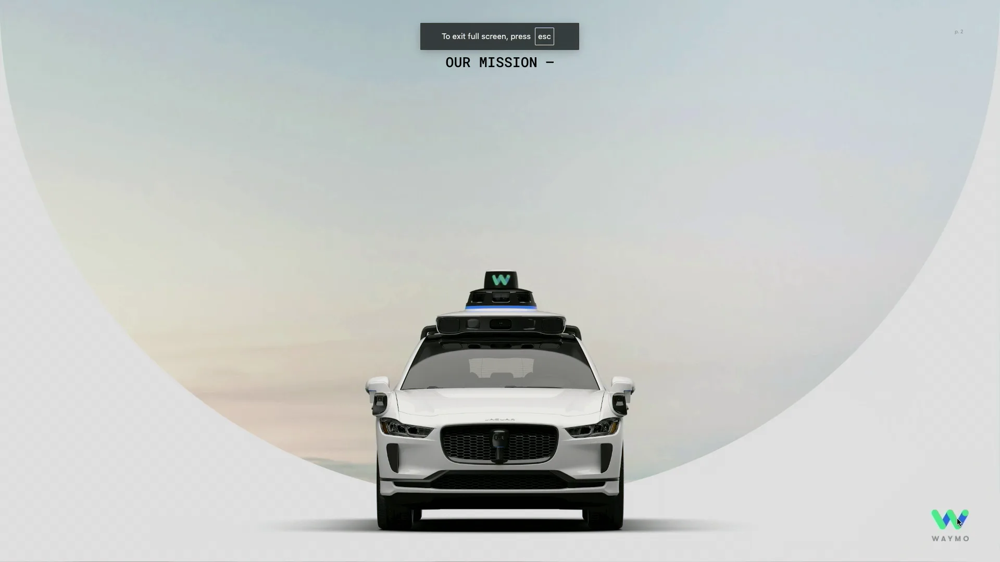
AI for Autonomous Driving at Scale (Waymo logo, car)
AI for Autonomous Driving at Scale（Waymo，车辆图）
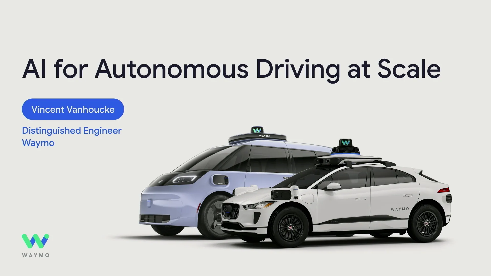
AI for Autonomous Driving at Scale
AI for Autonomous Driving at Scale
[01:26 – 02:00]
and driving the performance of those systems to the place it is today. So, our goal at Waymo is to be the world's most trusted driver. And trust is something that you have to earn. It's a very important core value of our work. We're not just in the business of autonomy for the sake of convenience. We want to really build trust and improve the lives of people,
并将这些系统的性能提升到今天的水平。因此，我们 Way Mo 的目标是成为世界上最值得信赖的司机。 And trust is something that you have to earn.这是我们工作非常重要的核心价值。我们从事自治业务不仅仅是为了方便。我们希望真正建立信任并改善人们的生活，
[02:00 – 02:31]
both people who are being driven by our autonomous systems and people around them who are experiencing autonomy in the real world. We are now live in San Francisco, in Phoenix, in LA, in Austin. In SF, Phoenix and Austin and Los Angeles, you can just download our app and use it as any customer. It's completely open to the public.
受我们的自治系统驱动的人们以及他们周围在现实世界中体验自治的人们。我们现在住在旧金山、凤凰城、洛杉矶、奥斯汀。在旧金山、菲尼克斯、奥斯汀和洛杉矶，您只需下载我们的应用程序并以任何客户的身份使用它。它完全向公众开放。
[02:31 – 02:53]
I commute using Waymo every morning. It's wonderful. I get basically half an hour on each way, basically just in a very nice, comfortable environment, doing my work and preparing for the day. So, if you get the opportunity to try it out and experience it,
我每天早上都使用 Way Mo 上下班。太棒了。我基本上单程有半个小时的时间，基本上只是在一个非常好的、舒适的环境中，完成我的工作并为这一天做准备。所以，如果你有机会去尝试和体验的话，
[02:53 – 03:18]
it can guarantee you that it will strongly impact the way you think about autonomy in general, to really experience it, makes a huge difference. We are serving now 150,000, more than 150,000 paid trip per week. Our expansions are a number of miles driven and customers served that's been expanding very,
它可以向您保证，它将强烈影响您对自治的总体看法，真正体验它会产生巨大的变化。我们现在为 150,000 人次提供服务，每周超过 150,000 次付费旅行。我们的扩张是行驶了数英里，服务的客户数量一直在不断扩大，
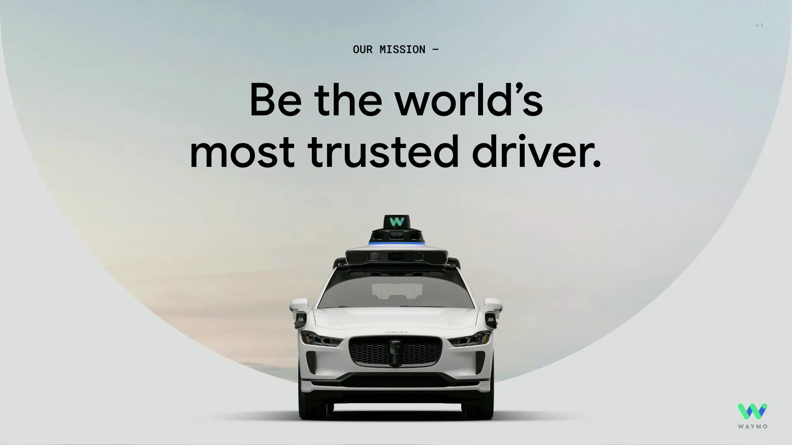
Be the world's most trusted driver.
成为世界上最值得信赖的司机
[03:18 – 03:53]
very rapidly in this past year. The feedback we're getting from customers is really good. Our goal is to be trusted, and that goes through being extremely safe and also being extremely transparent about how safety is really guiding the way we think about driving. So, we report very carefully any incidents that might happen,
在过去的一年里速度非常快。我们从客户那里得到的反馈非常好。我们的目标是获得信任，这需要极其安全，并且对于安全如何真正指导我们的驾驶方式保持高度透明。因此，我们非常仔细地报告可能发生的任何事件，
[03:53 – 04:20]
and so far track record has been very, very strong. So, 81% fewer airbag deployment crashes, 72% fewer injury causing crashes, 57% fewer police reported crashes, the more minor sort of incidents that may happen. And as you can imagine, we're in an environment
到目前为止，记录一直非常非常强劲。因此，安全气囊展开事故减少了 81%，造成伤害的事故减少了 72%，警方报告的事故减少了 57%（可能发生的轻微事故）。正如你可以想象的，我们所处的环境
[04:20 – 04:45]
where there is a lot of other drivers, and we try to mitigate the risks of other drivers behaving badly, but this is also an environment that's very dynamic and where we don't control all the factors. Next up, we're going to be expanding and bringing online new cars. So, this is a next generation car.
这里有很多其他司机，我们试图降低其他司机行为不当的风险，但这也是一个非常动态的环境，我们无法控制所有因素。接下来，我们将扩大规模并推出在线新车。所以，这是下一代汽车。
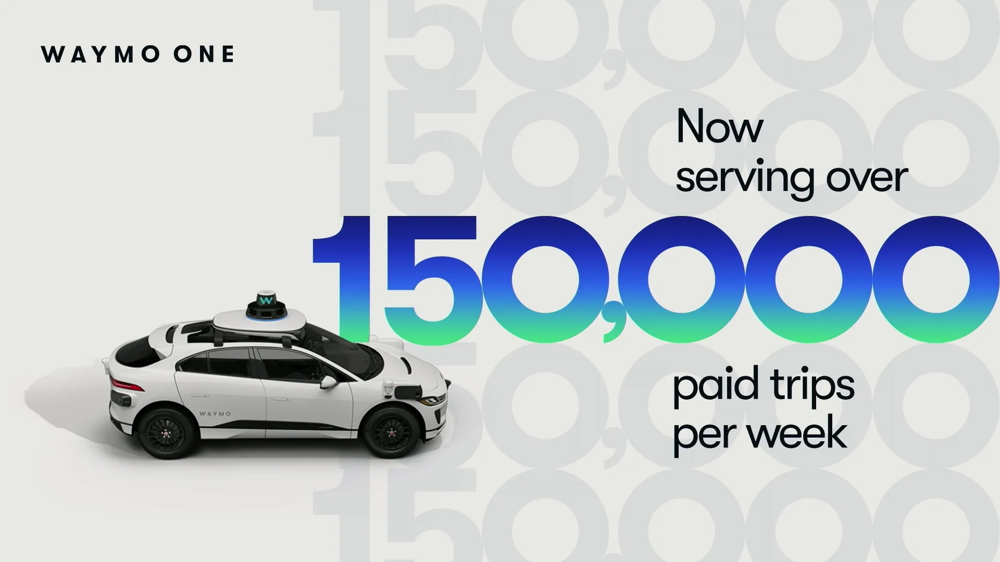
Now serving over 15,000,000 paid trips per week
每周完成超过 1500 万次付费出行
规模化成果：每周 1500 万次付费出行
- 每周完成超过 1500 万次付费 Robotaxi 出行
- Waymo One 安全性显著领先人类司机：伤害事故 -81%、警方报告事故 -72%、安全气囊弹出事故 -57%
[04:45 – 05:14]
It's got better sensor, better compute, much lower cost, and it's really designed to really improve the rider experience in the context of a rider-hailing business. So, large doors, electric doors that can open automatically, lots of space inside, room for a lot of displays for people to see what's going on.
它拥有更好的传感器、更好的计算能力、更低的成本，而且它的设计目的是真正改善网约车业务中的乘客体验。所以，大门很大，可以自动打开的电动门，里面有很多空间，可以放置很多显示器，让人们看到发生了什么。
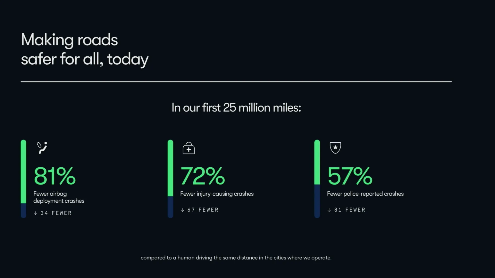
Waymo One is now safer for all, today — 81% fewer injury crashes, 72% fewer police-reported crashes, 57% fewer airbag crashes
Waymo One 现在对所有人更安全——伤害事故减少 81%、警方报告事故减少 72%、安全气囊弹出事故减少 57%
[05:14 – 05:33]
It's a really nice car. So, let's talk about the tech. So, autonomous driving at the core is, you know, the simple formulation is really simple, right? You have a lot of sensors, you have LIDAR systems, you have vision systems, you have radar system,
这真是一辆好车。那么，我们来谈谈技术。所以，自动驾驶的核心是，你知道，简单的公式真的很简单，对吧？你有很多传感器，你有激光雷达系统，你有视觉系统，你有雷达系统，
[05:33 – 05:52]
you also have audio capture, you drive, you have an agent that basically applies steering commands and acceleration commands. You also have to do other things like, you know, turning on the blinkers and things like that,
您还有音频捕获，您驾驶，您有一个基本上应用转向命令和加速命令的代理。你还必须做其他事情，比如，你知道，打开闪光灯之类的事情，
[05:52 – 06:12]
but at the core, it's really about a two degrees of freedom system. And you may wonder why that is a hard problem. There are very few degrees of freedom. Well, all of it is about the sensing and understanding of the world. So, what makes it so challenging?
但从本质上讲，它实际上是一个二自由度系统。您可能想知道为什么这是一个难题。自由度很少。嗯，所有这一切都是关于对世界的感知和理解。那么，是什么让它如此具有挑战性呢？
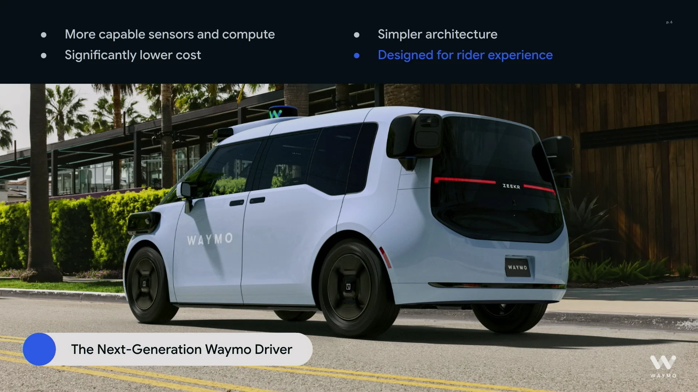
Introducing the Robot Experience Center — The Robot Generation Waymo Driver (Geely Zeekr vehicle)
全新机器人体验中心——机器人世代 Waymo Driver（吉利 Zeekr 车辆）
机器人体验中心与下一代车辆
- 推出 Robot Experience Center（基于 Geely Zeekr 平台）
- 为乘客提供定制化乘坐体验；展示下一代 Waymo Driver 硬件
[06:14 – 06:35]
We have to deal with a very complex environment, right? The real world is unforgiving. You have a variety of weather conditions, you have very high multidimensional inputs, and a lot of agents on the roads that don't necessarily follow the rules,
我们必须应对非常复杂的环境，对吗？现实世界是无情的。你有各种各样的天气条件，你有非常高的多维输入，路上有很多不一定遵守规则的代理，
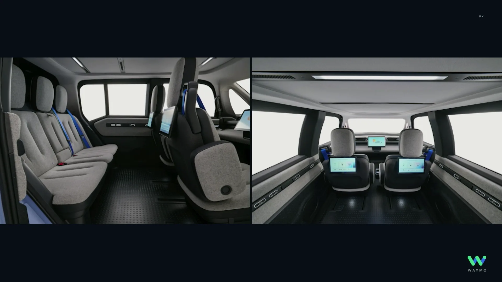
Interior of the next-generation Waymo vehicle
下一代 Waymo 车辆内部
[06:35 – 06:56]
and we have to adapt to any condition that can happen on the road, the nominal ones and the non-nominal ones, the things that, when things go wrong. We have very high performance requirements, right? It's obviously a safety-critical operation,
我们必须适应路上可能发生的任何情况，名义上的和非名义上的，以及出问题时的情况。我们对性能的要求非常高，对吗？这显然是一个安全关键的操作
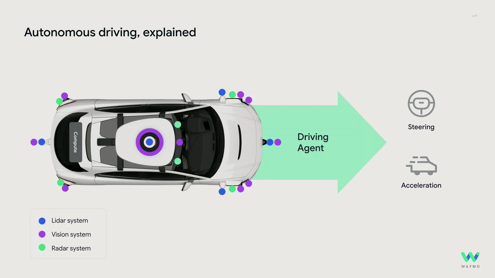
Driving Agent drives the car; Protection is the always-on safety layer (cameras, lidar, radar)
驾驶智能体负责开车；保护层作为全时安全兜底（相机、激光雷达、雷达）
双子系统架构：驾驶智能体 + 保护层
- Driving Agent 负责实际驾驶决策
- Protection 是 always-on 的独立安全兜底层
- 两者共享同一套传感器（相机、激光雷达、雷达），冗余校验
[06:56 – 07:18]
and the rare scenarios that happen not so rarely at scale are really dominating the equation of how we have to reason about the problem at large. And I'll give you some examples later. All of this needs to be real-time, all of this needs to be on board,
大规模发生的罕见情况确实主导了我们如何推理整个问题的方程式。稍后我会给你一些例子。所有这些都需要是实时的，所有这些都需要在船上，
[07:18 – 07:31]
so we have very tight real-time and reliability constraints in terms of the hardware and the inference, very strict latency requirements. So, as a systems problem, it's a very complex problem.
所以我们在硬件和推理方面有非常严格的实时性和可靠性约束，非常严格的延迟要求。因此，作为一个系统问题，这是一个非常复杂的问题。
[07:34 – 07:53]
So, here's just to frame things, a few examples of what you have to think about, right? This is, for example, a construction zone, you have cones, you have a difficult merge where you have to weave into the traffic and understand how to assert yourself in the lane.
所以，这只是为了框架，举几个你必须考虑的例子，对吧？例如，这是一个建筑区，你有锥体，你有一个困难的合并，你必须融入交通并了解如何在车道上维护自己。
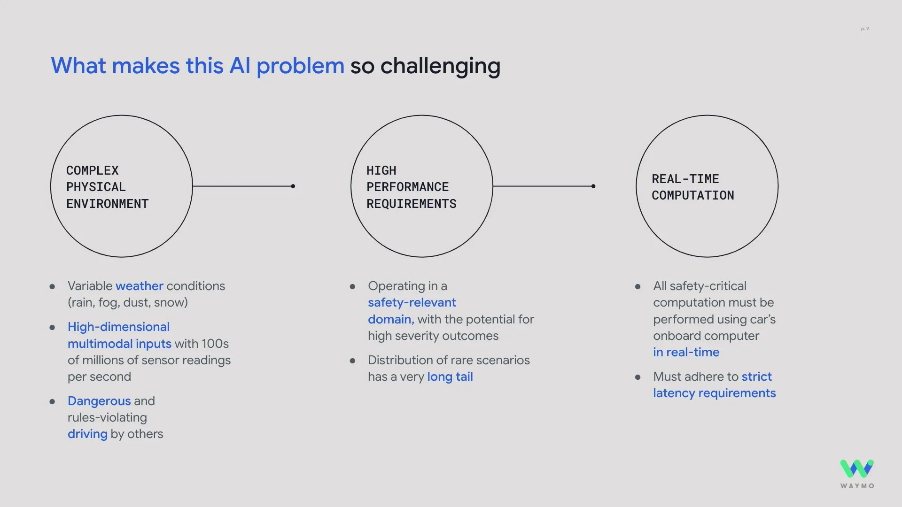
Driving Agent: Learn from rich sensor data, understand and predict the environment, learn from human driver demonstrations
驾驶智能体：从丰富的传感器数据学习，理解与预测环境，向人类司机示范学习
[07:53 – 08:10]
You may have emergency vehicles that are blocking the roads that you need to go around. Here's a fun one. This is a truck that is going the other way, and you have to know that you have to back up and you have a car right behind that also needs to be nudged
您的紧急车辆可能会堵塞您需要绕行的道路。这是一个有趣的。这是一辆向相反方向行驶的卡车，你必须知道你必须倒车，而且你后面有一辆车也需要被推动
[08:10 – 08:15]
to get out of the way so that the truck can go and you can go further.
让开，以便卡车可以行驶，您也可以走得更远。
[08:17 – 08:30]
This is a festival in San Francisco, lots of people around. You want to be able to navigate safely around them, but also get out of the way, right? You don't want to get stuck. You want to get rid of this environment
这是旧金山的一个节日，周围有很多人。您希望能够安全地绕过它们，但同时又要让路，对吗？你不想被困住。你想摆脱这个环境
[08:30 – 08:49]
that is less controlled and go back to a place where you have more predictability and not get in the way of people. This is at night. This is an example of a red light that is broken, but we know there is there,
回到一个更可预测且不会妨碍人们的地方。这是晚上。这是一个红灯坏了的例子，但我们知道那里有，
[08:49 – 09:06]
and the person that is right next to us didn't know. This is somebody driving like a mad person. All of this is every day, right? All of this, you think of it as, oh, this is really rare, but at scale, this is not something rare.
而我们旁边的人并不知道。这是一个像疯子一样开车的人。这一切都是每天发生的，对吗？所有这一切，你会认为，哦，这真的很罕见，但从规模来看，这并不是什么罕见的事情。
[09:06 – 09:26]
This is something that happens all the time. So the long-tail scenarios, and this is all real examples, can be really, really challenging, right? So cyclists getting frisky with the car, toddlers running into the streets,
这是经常发生的事情。所以长尾场景，这都是真实的例子，可能真的非常具有挑战性，对吧？所以骑自行车的人骑着汽车变得活泼，幼儿跑到街上，
[09:26 – 09:47]
skateboarders, barbecue grills on the highway, falling trees, floods, and then road blockages or people changing lanes in front of you. All of that, par for the course. This is a daily thing that we have to reason about. And remember, we are completely autonomous,
滑板者、高速公路上的烧烤架、倒下的树木、洪水，然后是道路堵塞或人们在你面前变道。所有这些，都是理所当然的。这是我们每天都必须思考的事情。请记住，我们是完全自主的，
[09:47 – 10:08]
so there is no human loop. The system has to be able to handle this and make progress and not get stuck and make progress in a way that is safe. Okay, so how does AI come into the picture? So obviously, this can be sort of framed
所以不存在人为循环。系统必须能够处理这个问题并取得进展，而不是陷入困境并以安全的方式取得进展。好的，那么人工智能是如何发挥作用的呢？很明显，这可能是一种陷害
[10:08 – 10:26]
as a general AI problem, right? You have a lot of sensors. You want to use this rich sensor input to understand and predict the environment you're in. You have a lot of human driver demonstrations that are generally very good.
作为一个一般的人工智能问题，对吧？你有很多传感器。您希望使用这种丰富的传感器输入来理解和预测您所处的环境。您有很多人类驾驶员的演示，这些演示通常都非常好。
Transition slide (black with red dot)
过渡页（黑底红点）
[10:26 – 10:43]
Humans are really good at driving. You want to learn from them. You don't want to learn bad practices if humans actually don't react in the right way in some circumstances, and that all can also happen. But in general, sort of being able to imitate humans
人类真的很擅长驾驶。你想向他们学习。如果人类在某些情况下实际上没有以正确的方式做出反应，那么你不想学习不好的做法，而这一切也可能发生。但总的来说，有点能够模仿人类
[10:43 – 11:00]
provides a lot of signal. And then the challenge is really generalization. We have all those really long-tail behaviors that we need to be able to take into account, and we need to figure out how to take as much information from our data
提供大量信号。然后挑战就是真正的泛化。我们需要考虑所有那些真正的长尾行为，并且我们需要弄清楚如何从数据中获取尽可能多的信息
[11:00 – 11:14]
to learn about those long-tail environments. So a typical autonomous driving stack looks roughly like this, right? You have sensors. You have a perception system, prediction and planning systems,
了解那些长尾环境。典型的自动驾驶堆栈看起来大致是这样的，对吧？你有传感器。你有一个感知系统、预测和计划系统，
[11:14 – 11:34]
and then you hand it off to controls. And there are different ways to approach this. The way we look at perception is we aggregate everything into a bird's eye view map. It's a map centered around the autonomous vehicle that has a representation of all the agents on the scene
然后将其交给控制人员。有不同的方法可以解决这个问题。我们看待感知的方式是将所有内容聚合成鸟瞰图。这是一张以自动驾驶汽车为中心的地图，代表了现场的所有代理
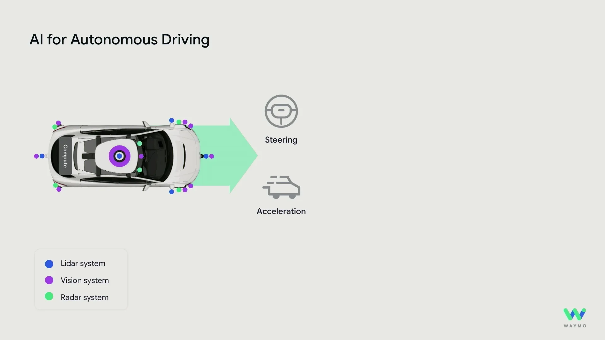
Sensors feed both Driving and Protection subsystems (camera, lidar, radar)
传感器同时服务于驾驶与保护两个子系统（相机、激光雷达、雷达）
[11:34 – 11:51]
and that enables us to do planning through intermediate outputs that describe the scenes. So it can be 3D object boxes, various attributes of the different agents, and occupancy grades and things like that. There are some pros and cons to having
这使我们能够通过描述场景的中间输出进行规划。因此它可以是 3D 对象框、不同代理的各种属性以及占用等级等。有一些优点和缺点
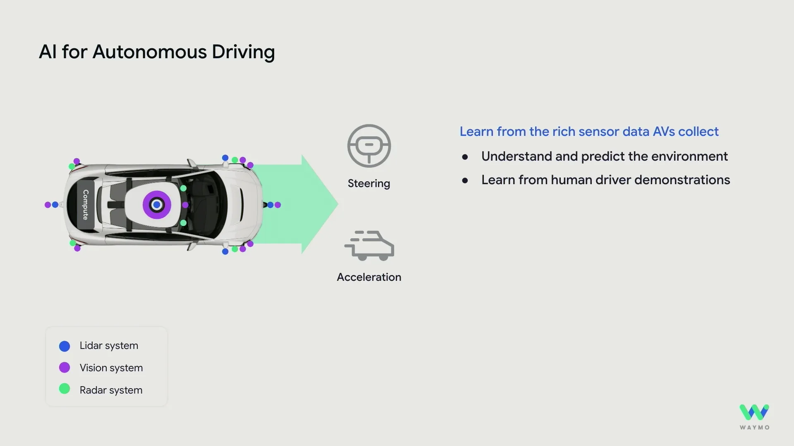
Learn from the rich sensor data the world collects — understand & predict the environment, learn from human driver demonstrations
从世界收集的海量传感器数据中学习——理解与预测环境，向人类司机示范学习
感知模块：如何从数据中学习
- 核心挑战：泛化——需要学习的远比单车视角所见多
- 方法：模仿学习 + 表征学习 + 仿真测试 + 对抗/合成数据
- 中间输出：位姿、速度、意图、控制信号
[11:51 – 12:06]
this kind of intermediate representation, right? It's very good at enabling generalization. Once you have this kind of representation that aggregates all the data and distills it to something very simple and very geometric,
这种中间表示，对吗？它非常擅长实现泛化。一旦你有了这种聚合所有数据并将其提炼成非常简单且非常几何的东西的表示形式，
[12:06 – 12:26]
this, in our experience, generalizes very well. You can validate things because you have a very succinct representation, and so you can simulate and do testing and do counterfactuals and do experiments with that data by just changing things
根据我们的经验，这一点很好地概括了。您可以验证事物，因为您有一个非常简洁的表示，因此您可以模拟并进行测试，进行反事实，并通过更改事物来使用该数据进行实验
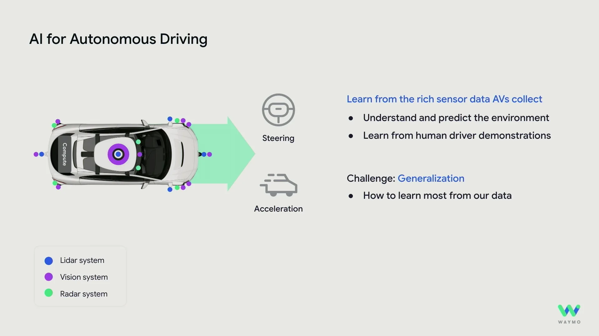
Challenge: Generalization — need to learn much more than what one vehicle sees
挑战：泛化——需要学习的内容远超过单车视角所见
[12:26 – 12:48]
and asking questions about the data. And it's a really powerful feature to have. It really compresses the data in a way that enables us to change how we... the data mix between what is the responsibility of a perception subsystem
并询问有关数据的问题。这是一个非常强大的功能。它确实以一种使我们能够改变感知子系统职责之间的数据混合的方式压缩数据
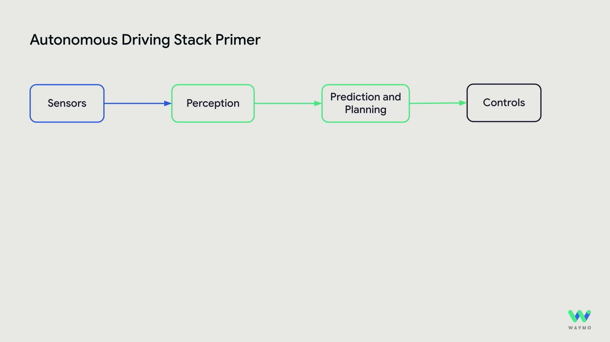
Driving stack overview: Sensors → Perception → Prediction and Planning → Controls
驾驶栈总览：传感器 → 感知 → 预测与规划 → 控制
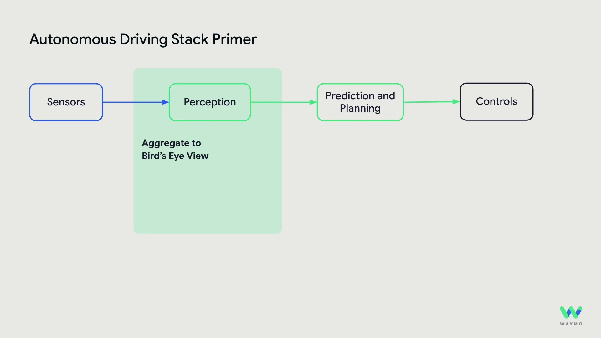
Approach to learn from data (Perception highlighted)
从数据中学习的方法（感知模块被高亮）
[12:48 – 13:06]
and the responsibility of a behavior modeling subsystem. Now, the cons of something like this is that obviously it can become more complicated. You have a lot of feature design. You need to design this representation. It's a lot more opinionated
以及行为建模子系统的职责。现在，这样的事情的缺点是显然它会变得更加复杂。你有很多功能设计。您需要设计这个表示。更有主见
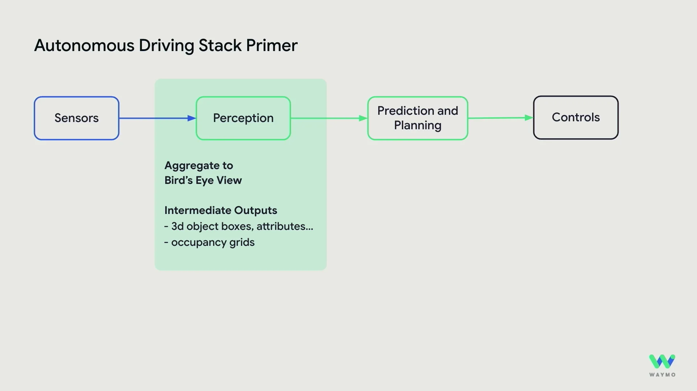
Approach to learn from data: Intermediate Outputs — pose, velocities, intent, controls
从数据中学习的方法：中间输出——位姿、速度、意图与控制信号
[13:06 – 13:23]
than if you didn't have these intermediate representations, and you need labels. So labels are kind of a... you need to be able to sort of label all the agents and all the interactions in the scene. It's a double-edged sword, right?
如果你没有这些中间表示，并且你需要标签。所以标签有点......你需要能够对场景中的所有代理和所有交互进行分类。这是一把双刃剑，对吧？
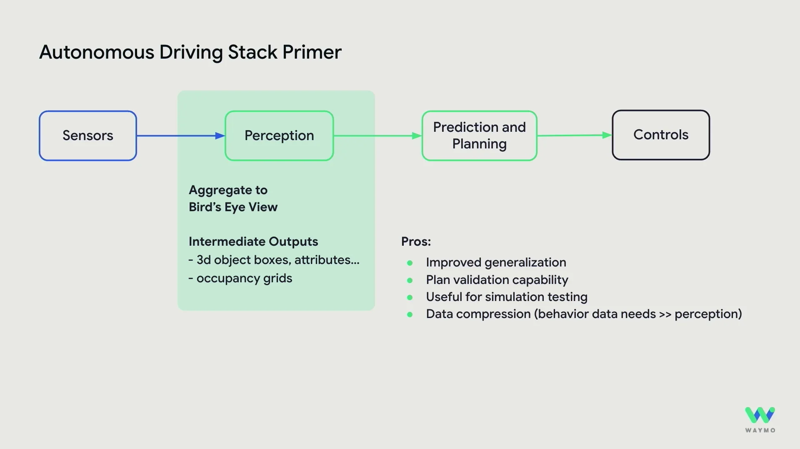
How: imitation, representation learning, simulation testing, adversarial/synthetic data
如何做：模仿学习、表征学习、仿真测试、对抗/合成数据
[13:23 – 13:38]
So labeling can be expensive. On the other hand, once you have labels, you have a lot of signal, and you've got a lot of supervision that you can use to improve your system. So example of labels can be, for example,
因此，贴标签可能会很昂贵。另一方面，一旦你有了标签，你就有了很多信号，并且你有了很多可以用来改进你的系统的监督。因此标签的例子可以是，例如，
[13:38 – 13:58]
pedestrian key points. This is an example of a scene where you have people guiding traffic. So we need to be able to reason about the people in the scenes and what they are trying to express. This is somebody driving, saying,
行人关键点。这是有人引导交通的场景示例。因此，我们需要能够推理场景中的人物以及他们想要表达的内容。这是一个开车的人说，
[13:58 – 14:12]
hey, the left lane needs to go. You're expected to wait. And then they're going to change their attitude and wave you to go through. This is something we need to understand. This is something we need to react to.
嘿，左边的车道需要走。你应该等待。然后他们会改变态度并挥手让你过去。这是我们需要理解的。这是我们需要做出反应的事情。
[14:12 – 14:34]
And so having a representation enables us to learn those semantics is an important thing. So let's talk about sort of what are the various ingredients that make this kind of AI driving stack possible at scale. So first, model architectures. One of the big challenges with this problem setting
因此，拥有表示使我们能够学习这些语义是一件重要的事情。那么让我们来谈谈使这种人工智能驾驶堆栈大规模成为可能的各种要素是什么。首先，模型架构。这个问题设置的一大挑战
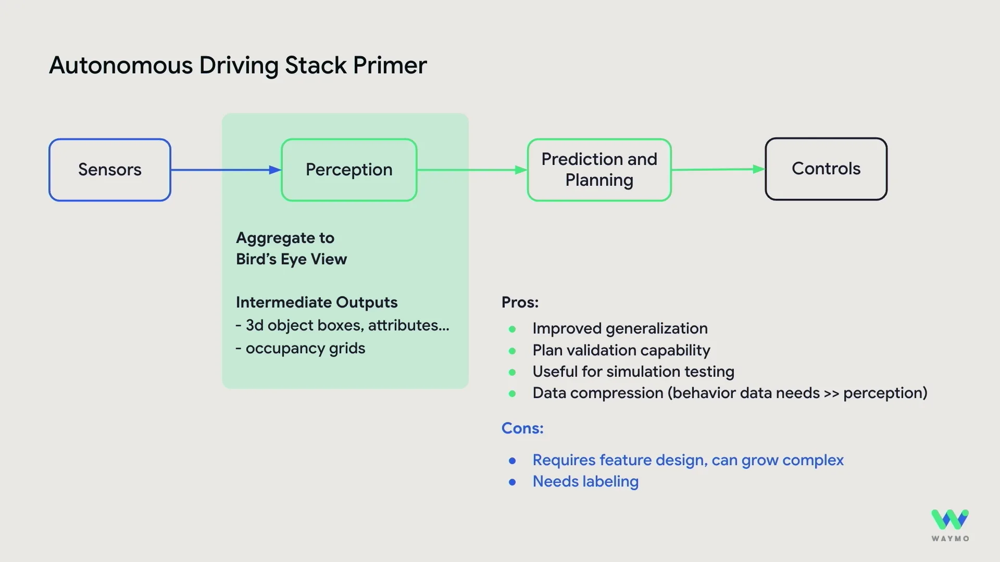
Recap of how Perception learns from data
感知模块如何从数据中学习的总结
[14:34 – 14:59]
that we have with this taking lots of inputs, lighter and camera, and then compressing it into this bird's eye view representation is that the typical computer vision architectures, like confidence, are not really suited for those. The dense convolution, it's quadratic in the space
我们需要大量输入、打火机和相机，然后将其压缩成鸟瞰图表示，典型的计算机视觉架构（例如信心）并不真正适合这些。密集卷积，在空间中是二次的
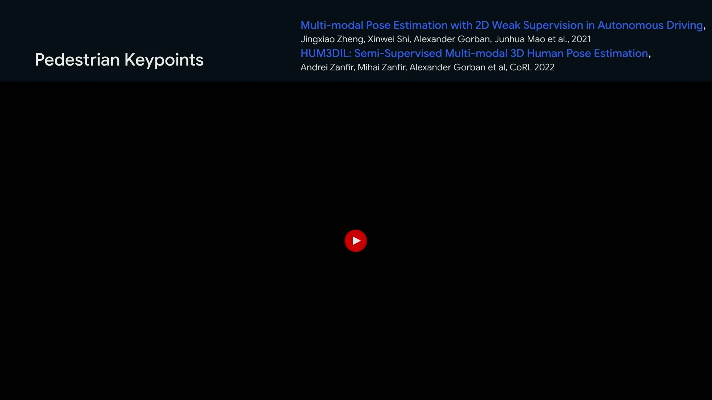
Section transition: Architect and Approach
章节过渡：架构与方法
[14:59 – 15:18]
that you have to cover. And we want to be able to cover really long distances at a very fine level of granularity. We want to have centimeter or millimeter level precision, but also cover hundreds of meters in terms of span. And then sparsity can help, but it's also a double-edged sword.
你必须涵盖的内容。我们希望能够以非常精细的粒度覆盖很长的距离。我们希望有厘米级或毫米级的精度，但跨度也要覆盖数百米。稀疏性会有所帮助，但它也是一把双刃剑。
[15:18 – 15:31]
It's not really compatible with the modern hardware requirements. A lot of people like really dense operations because the hardware has been sort of tailored and optimized for that. And then once you have sparsity,
它与现代硬件要求并不真正兼容。很多人喜欢真正密集的操作，因为硬件已经为此进行了定制和优化。然后一旦你有了稀疏性，
[15:31 – 15:57]
it's very hard to communicate between the different sparse entities, and you have to sort of do extra work for this. So we've kind of opted for those two are terrible. Let's do both and try to see if we can get the best of both worlds in some ways. So this swformer is a version of transformer architecture,
不同稀疏实体之间的通信非常困难，您必须为此做一些额外的工作。所以我们选择了这两个，这两个都很糟糕。让我们两者都做，看看是否可以在某些方面两全其美。所以这个swformer是transformer架构的一个版本，
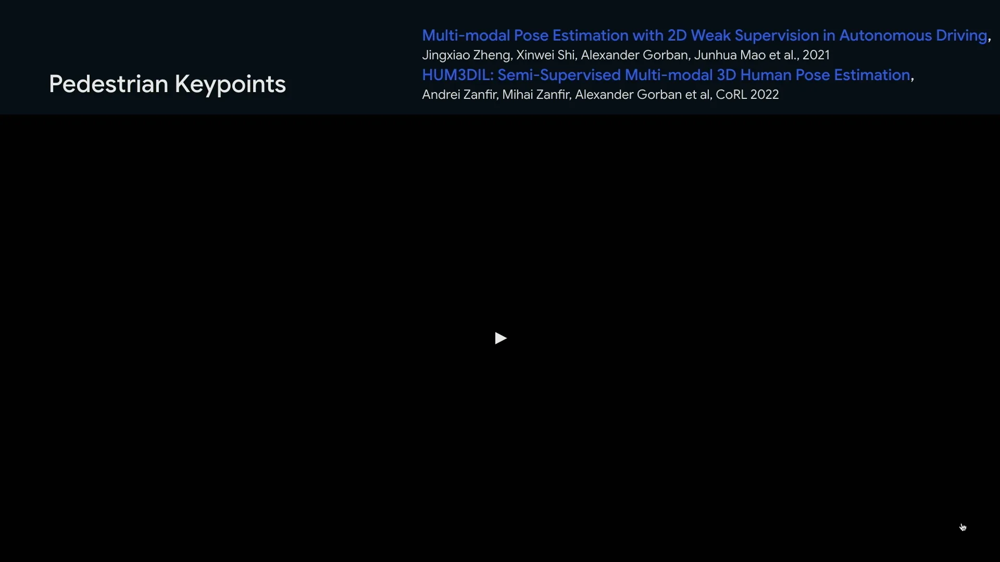
Prediction: Keypoints
预测：关键点
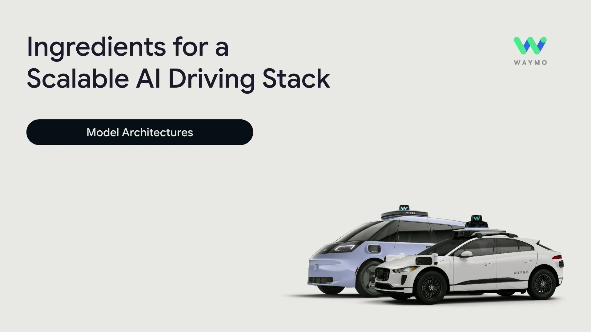
The foundations for a Scalable AI Driving Stack — Model Architectures
可扩展 AI 驾驶栈的基础——模型架构
Transformer architecture for Bird's-Eye-View processing? Scene generation, understanding, simulation
用于鸟瞰视角处理的 Transformer 架构？场景生成、场景理解、场景仿真
预测：关键点
- 关键点预测是驾驶栈的重要中间表示
- 为下游规划提供结构化、可解释的未来状态
[15:57 – 16:16]
which uses sparse windows and enables this fusion of 3D object detection. And roughly, I won't go into details. The idea is that you take this extremely long range sparse point cloud representation, you do a sparse partition of the space,
它使用稀疏窗口并实现 3D 对象检测的融合。大致而言，我不会详细说明。这个想法是，你采用这个极长范围的稀疏点云表示，你对空间进行稀疏分区，
[16:16 – 16:40]
you aggregate all the information in that sparse partition, and then you aggregate that information at multiple scale so that you actually have communication between the different sparsity islands that enable you to do global spatial reasoning and turn that into detection outputs.
您聚合该稀疏分区中的所有信息，然后在多个尺度上聚合该信息，以便您在不同的稀疏岛之间真正进行通信，从而使您能够进行全局空间推理并将其转化为检测输出。
[16:40 – 17:00]
This works very well. This is a slightly old results, but compared to the state of the art at the time, that was much better and actually very efficient. This is what it looks like in practice. So this is the kind of detections that we can get.
这非常有效。这是一个有点旧的结果，但与当时的最先进技术相比，这要好得多，而且实际上非常高效。这就是实际情况。这就是我们可以获得的检测结果。
[17:00 – 17:23]
As you can see, the detections are extremely long range and have a lot of entities. I'm trying to see if I can replay it because that was short. You have a lot of entities in the scene, and the system is able to track them with very high degrees of fidelity.
正如您所看到的，检测范围非常远并且有很多实体。我想看看是否可以重播，因为时间很短。场景中有很多实体，系统能够以非常高的保真度跟踪它们。
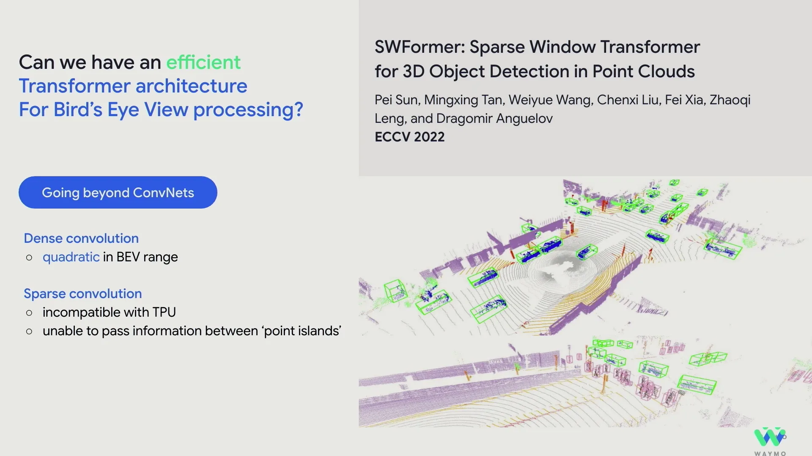
Transformer architecture for Bird's-Eye-View processing — scenarios
用于鸟瞰视角处理的 Transformer 架构——应用场景
[17:23 – 17:42]
It's even more important at night. At night, lidars are extremely powerful, extremely low-light environment. You see there is an accident right in front of us there, and the system is able to identify that there are two cars that are right next to each other
晚上就更重要了。在夜间，激光雷达的威力极其强大，光线极其微弱的环境下。你看我们前面发生了一起事故，系统能够识别出有两辆车紧挨着
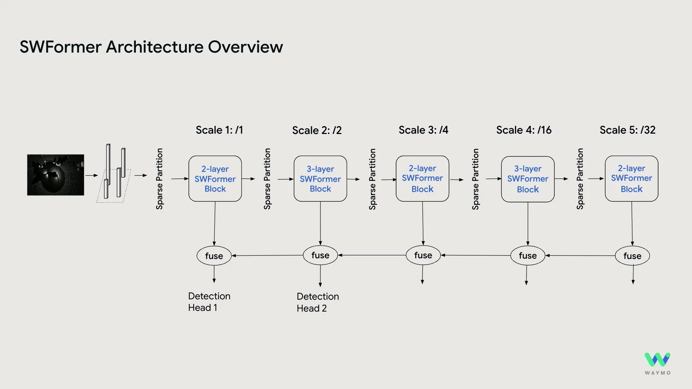
Data scaling: Scale 0.1 → 0.5 → 1.0 → 2.0 → 5.0 (charts)
数据规模：0.1 → 0.5 → 1.0 → 2.0 → 5.0（图表）
基础：模型架构——用于 BEV 的 Transformer
- 为鸟瞰视角（BEV）设计 Transformer 架构
- 同时支撑场景生成、场景理解、场景仿真
- 潜在替代复杂的传统多阶段流水线
数据与模型规模化缩放曲线
- 数据规模从 Scale 0.1 → 5.0 进行消融
- 模型容量随之同步放大，观察 loss 与任务指标的缩放律
[17:42 – 17:57]
and reason about them. So this is really powerful. As a human driver, I don't have those superpowers of being able to see so far ahead, so far behind me and reason about the entirety of the traffic.
并对它们进行推理。所以这真的很强大。作为一名人类司机，我没有超能力能够看到前方、后方的距离，并推断出整个交通状况。
[17:57 – 18:21]
That would be lovely to be able to reason about stoppages and accidents or just traffic jams and things like this. This is really a superpower. Another aspect of the modeling problem is behaviors. Beyond perception, we want to understand
如果能够推理出停车和事故或者交通堵塞之类的事情，那就太好了。这确实是一种超能力。建模问题的另一个方面是行为。除了感知之外，我们还想理解
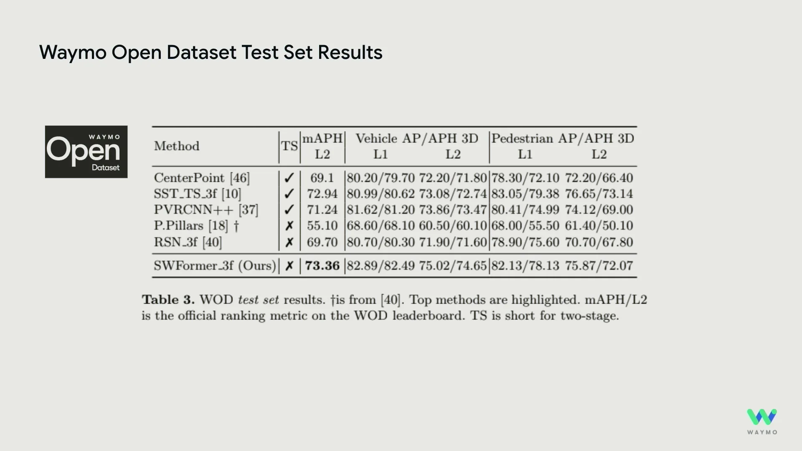
Model performance table (architecture ablation)
模型性能对比表（架构消融）
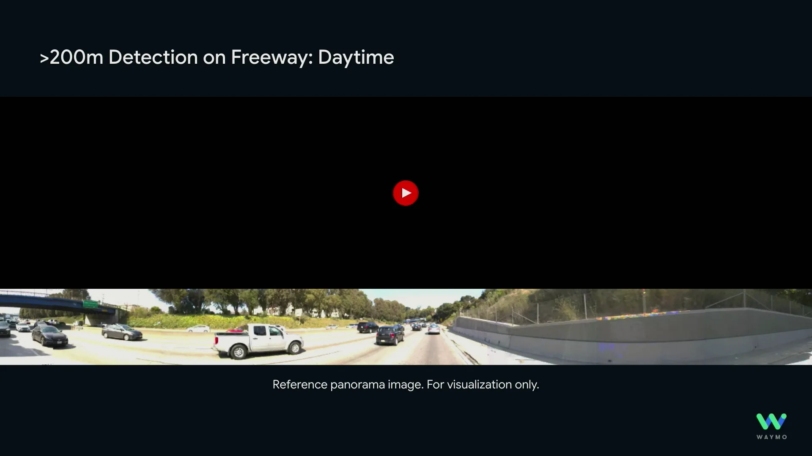
Sample reasoning stage 1a — simulation only
推理阶段 1a 示例（仅仿真）
[18:21 – 18:43]
how cars and agents in general behave in the real world. We can give it the deep-running treatment. It's a problem of inputs with state of the world, agent history, traffic lights, the road network. You feed that to a neural network, and it can output for all the agents in the scene
汽车和代理在现实世界中的一般行为如何。我们可以对其进行深度处理。这是一个关于世界状况、代理历史、交通信号灯、道路网络的输入问题。您将其输入神经网络，它可以为场景中的所有代理输出
Sample reasoning stage 1b — simulation only
推理阶段 1b 示例（仅仿真）
[18:43 – 18:59]
or for a number of agents in the scene a number of trajectories with both their likelihoods and the uncertainty around them. This is slightly all the work, but it sets the framing for the problem. You have a bird's eye view representation with agents
或者对于场景中的许多代理来说，有许多轨迹及其可能性和周围的不确定性。这只是全部工作，但它为问题设定了框架。您可以与代理进行鸟瞰图展示
Sample reasoning stage 2 of this Waymo run
本次 Waymo 行程的推理阶段 2 示例
[18:59 – 19:23]
and you try to estimate what kind of possible futures can exist based on those agents. Obviously, we've upgraded to the modern transformer architectures. Since then, you express it as a self-attention encoder and then a GMM predictor to model
然后你尝试根据这些代理来估计可能存在的未来类型。显然，我们已经升级到现代变压器架构。从那时起，您将其表示为自注意力编码器，然后将其表示为 GMM 预测器来建模
Sample reasoning stage 3a of this Waymo run
本次 Waymo 行程的推理阶段 3a 示例
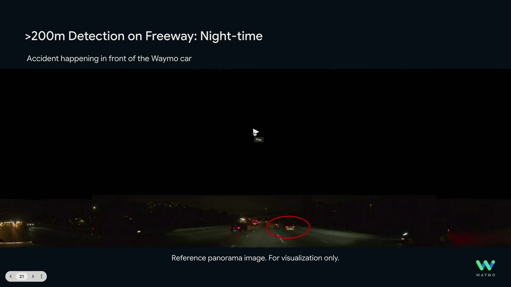
Sample reasoning stage 3b of this Waymo run
本次 Waymo 行程的推理阶段 3b 示例
[19:23 – 19:41]
the various trajectories of the agents in the scene. There is a slight issue with this, which is that if you're only modeling all the trajectories independently, you're going to end up with non-physical outputs. This is an example of a scene
场景中特工的各种轨迹。这有一个小问题，那就是如果您只是独立地对所有轨迹进行建模，那么您最终将得到非物理输出。这是一个场景的例子
推理阶段可视化（仿真 only → 真车 run）
- 先在仿真中验证推理质量
- 再在 Waymo 真车行程中逐阶段可视化：1a→1b→2→3a→3b
[19:41 – 20:02]
where we predicted two different agents. Because they modeled relatively independently, we predict that they will collide, which in practice will not happen. This is a useful prediction to bootstrap a system, but we want something that is a lot more realistic
我们预测了两种不同的代理。因为它们相对独立地建模，所以我们预测它们会发生碰撞，但实际上不会发生。这是引导系统的有用预测，但我们想要更现实的东西
[20:02 – 20:25]
and physical. One way we approach this is to give it the large-language model treatment in a sense. You can imagine driving as a conversation between agents, and it's a visual conversation. You drive a little bit and you signal your intent
和身体。我们解决这个问题的一种方法是在某种意义上给予它大语言模型处理。您可以将驾驶想象为代理之间的对话，而且这是一种视觉对话。你开一点就表明你的意图
[20:25 – 20:45]
to the other agents in the scene. The other agents are going to be reacting to their own expectation about what you are going to be doing, and so on and so forth. You have a similar kind of structure as language in the sense that you have a very concrete vocabulary.
给现场的其他特工。其他特工将根据他们自己对你将要做什么的期望做出反应，等等。从某种意义上说，您拥有与语言类似的结构，即您拥有非常具体的词汇。
[20:45 – 21:04]
You have continuity of the local trajectories. There is a temporal structure, but then you have a global context that you need to take into account. The way we model this is we model this as motion-token sequences that basically
你有局部轨迹的连续性。有一个时间结构，但你还有一个需要考虑的全局背景。我们建模的方式是将其建模为运动令牌序列，基本上
[21:04 – 21:31]
are being generated autoregressively and that basically represent the relative motion of different agents. It's again a transformer encoder, and then the decoder is also a causal cross-attention transformer that basically models all the different possible directions
是自回归生成的，基本上代表了不同主体的相对运动。它又是一个 Transformer 编码器，然后解码器也是一个因果交叉注意力 Transformer，基本上对所有不同的可能方向进行建模
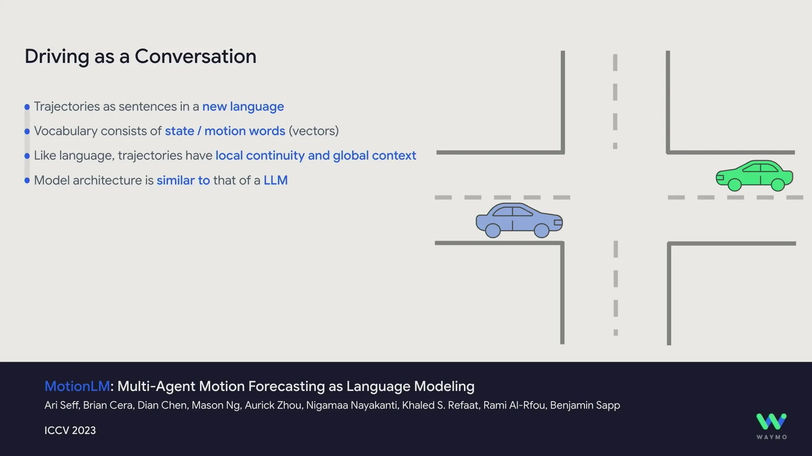
Prediction as evidence in a new language — predictive control of static & within-lane motion
把预测当作一种新语言中的「证据」——用于控制静止与同车道运动
预测即「新语言」中的证据
- 把预测视作一种可被调用、可被组合的新语言
- 用于控制静止与同车道运动，支持任意时刻触发
- 运动令牌（motion tokens）作为序列预测的基本单位
[21:31 – 21:46]
that the various agents can go. Here's an example. If you just do marginal prediction, your two agents are again modeled independently and are colliding on the left. If you do joint prediction with causal relationship
各个特工都可以去。这是一个例子。如果您只进行边际预测，您的两个代理将再次独立建模并在左侧发生碰撞。如果你做因果关系的联合预测
[21:46 – 22:07]
between the two, you can see that the agents basically reason about each other relative to each other and the two entities do not collide. In practice, it works extremely well. We are doing very well on all the benchmarks that exist in the space.
在两者之间，您可以看到代理基本上彼此相对地进行推理，并且两个实体不会发生冲突。在实践中，它的效果非常好。我们在该领域现有的所有基准方面都做得非常好。
[22:07 – 22:27]
One of the nice things about this architecture is that it's very flexible at test time. You basically generate and sample possible trajectories. You can also generate various interaction patterns between the different agents and pick which agents that you want to model jointly
该架构的优点之一是它在测试时非常灵活。您基本上生成并采样可能的轨迹。您还可以在不同代理之间生成各种交互模式，并选择要联合建模的代理
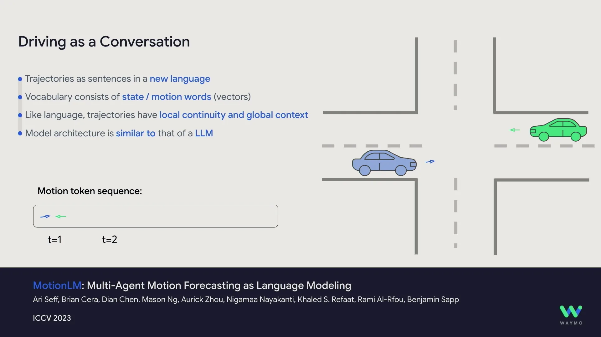
Motion token sequence diagrams
运动令牌序列示意
[22:27 – 22:48]
or which ones can be modeled independently. You can basically use a lot of inference time compute and use your budget of inference time compute to tune basically how well you want to be doing against what you can afford in terms of the overall system.
或者哪些可以独立建模。您基本上可以使用大量的推理时间计算，并使用推理时间计算的预算来根据整个系统的承受能力来调整您想要的效果。
Motion token sequence — predictive controllers can be invoked at any time
运动令牌序列——预测控制器可在任意时刻被调用
Motion token sequence — final sequence
运动令牌序列——最终序列
Motion token sequence — variants
运动令牌序列——变体
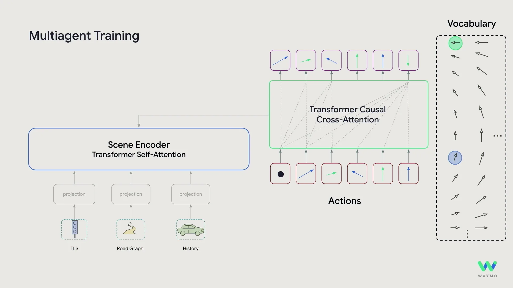
Motion token sequence — additional variant
运动令牌序列——另一种变体
[22:52 – 23:07]
More recently, and this is something that will be presented later at NERPS, we've been using diffusion model as another approach to generating trajectories. This is work called scene diffuser. I won't go over it too much, but please go to the poster.
最近，我们一直在使用扩散模型作为生成轨迹的另一种方法，这将在稍后的 NERPS 上介绍。这是称为场景扩散器的作品。我不会过多赘述，但请看海报。
[23:07 – 23:29]
It's this Friday at 4.30. The idea is that you can use diffusion to initialize scenes for simulation environment, and then you can use it also to roll things out. You generate initial setups that is consistent with the constraints of the simulation that you want to run,
今天是周五 4.30。这个想法是，您可以使用扩散来初始化模拟环境的场景，然后您也可以使用它来推出东西。您生成与要运行的模拟的约束一致的初始设置，
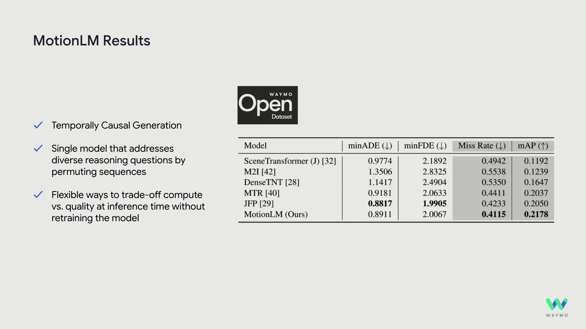
Closed-loop agent model: Scene Encoder → Memory Self-Attention → Transformer Decoder Cross-Attention → Actions
闭环智能体：场景编码器 → 记忆自注意力 → Transformer 解码器交叉注意力 → 动作
[23:29 – 23:53]
and then you can play forward the different instantiations of that scenes as they happen in the real world. The way we do this is using diffusion models, but in a way that is interesting because we can actually roll out the trajectories as we diffuse through the diffusion process.
然后您可以播放这些场景在现实世界中发生的不同实例。我们这样做的方式是使用扩散模型，但方式很有趣，因为我们实际上可以在扩散过程中扩散时推出轨迹。
[23:53 – 24:13]
You can imagine that you have a trajectory that is extremely noisy in the future, but as you step forward in your prediction, you basically reduce uncertainty, and the diffusion process is now able to make a more precise prediction about the future
你可以想象你未来有一个极其嘈杂的轨迹，但随着你的预测向前迈进，你基本上减少了不确定性，扩散过程现在能够对未来做出更精确的预测
[24:13 – 24:33]
of that particular trajectory, and the denoising process is basically amortized as you generate the trajectories over time. Okay, so let's talk about scaling. Scaling laws are very much in fashion these days. A lot of attention is being paid to
当你随着时间的推移生成轨迹时，去噪过程基本上会被摊销。好吧，我们来谈谈缩放。如今，缩放法则非常流行。受到很多关注
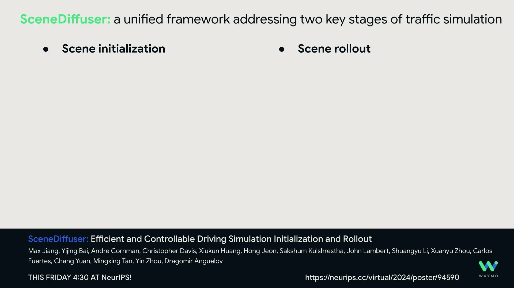
Sampling study: number of heads/layers vs. inference cost
采样研究：头数/层数与推理开销
[24:33 – 24:51]
how do we scale and what are the right strategies to scale and how do we predict future scaling. For us, it's no different. This is an example of the motion LM model where we can estimate essentially with a different number of parameters,
我们如何扩展，正确的扩展策略是什么，以及我们如何预测未来的扩展。对于我们来说，这没有什么不同。这是运动 LM 模型的一个示例，我们基本上可以使用不同数量的参数进行估计，
[24:51 – 25:13]
different levels of training data, basically what is the optimal scaling laws and the optimal loss for those models. We can use it to predict based on parameters and number of flops where we should be optimizing the system in terms of the data computes and size.
不同级别的训练数据，基本上这些模型的最佳缩放法则和最佳损失是什么。我们可以使用它根据参数和触发器数量来预测我们应该在数据计算和大小方面优化系统。
[25:13 – 25:36]
It's very interesting that the laws that we find are not the same as the laws that we see in traditional LLMs. In fact, they're very different by orders of magnitude, which really speaks to this idea that it's really a matter of the data distribution.
非常有趣的是，我们发现的规律与我们在传统法学硕士中看到的规律并不相同。事实上，它们在数量级上有很大不同，这确实说明了这个想法：这实际上是数据分布的问题。
[25:36 – 25:59]
If you have a language that is a Zipfian in nature, motion is not quite the same. As a result, this change in the distributional properties of data you're trying to model makes a big difference. You shouldn't be taking your scaling laws for granted if you're in a different space than the traditional LLM space.
如果你有一种本质上是 Zipfian 的语言，那么运动就不太一样了。因此，您尝试建模的数据的分布属性的这种变化会产生很大的差异。如果您所处的空间与传统的法学硕士空间不同，您不应该将缩放法则视为理所当然。
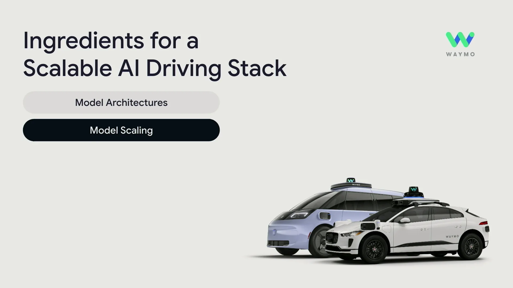
Scene rollout (two panels)
场景推演（两幅图）
行为时域与序列长度缩放
- 研究不同预测时域（行为时域）的精度曲线
- 对比长度 1/2/4 序列的算力-精度折中
- 给出 Token PerM、Inference Time/Step 等工程指标
[26:00 – 26:16]
We also confirm that our scaling laws actually matter not just in terms of perplexity, but also translate to the actual metrics that we care about that measure the performance. Those are two examples, a mean AD and an AD,
我们还确认，我们的缩放法则实际上不仅在困惑度方面很重要，而且还转化为我们关心的衡量性能的实际指标。这是两个例子，平均 AD 和 AD，
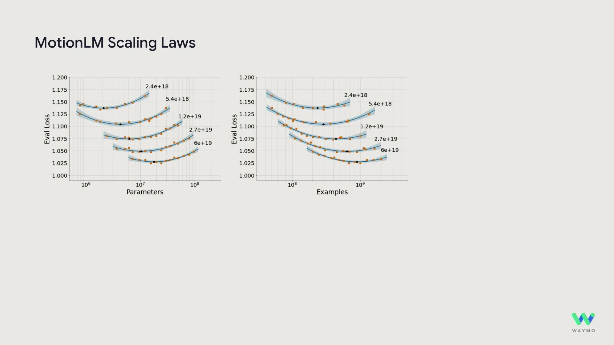
The foundations for a Scalable AI Driving Stack — Model Architectures
可扩展 AI 驾驶栈的基础——模型架构
[26:16 – 26:24]
examples of things that are much closer to the actual outcome that we are looking for.
更接近我们正在寻找的实际结果的例子。
[26:26 – 26:46]
Then, as I mentioned, for motion LLM, we can also spend more compute at inference time because it's a sampling process. There is also scaling laws at inference time, which actually suggests that depending on where you want to spend your budget at inference time,
然后，正如我提到的，对于运动 LLM，我们还可以在推理时花费更多计算，因为它是一个采样过程。推理时也存在缩放定律，这实际上表明，根据您想在推理时将预算花在哪里，
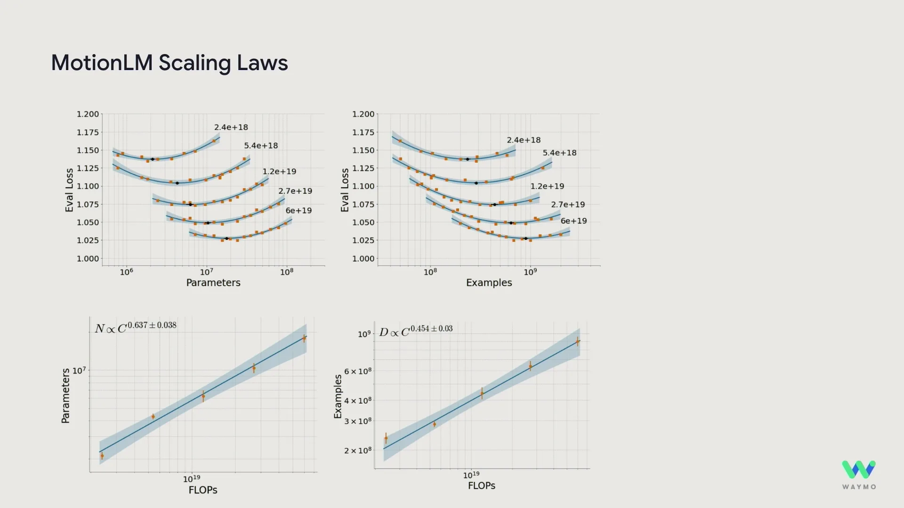
Behavior horizon charts
行为时域图表
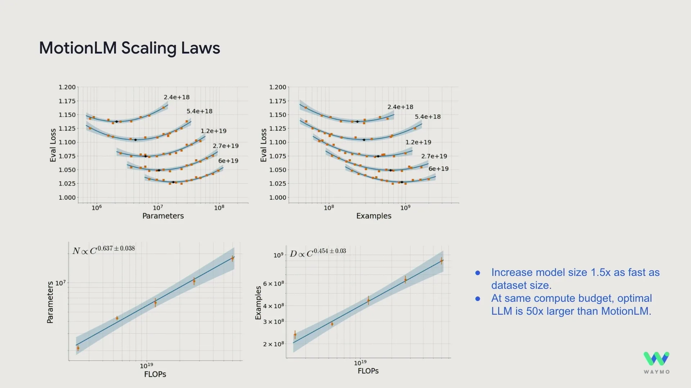
Length 1 / 2 / 4 sequence scaling charts
长度 1 / 2 / 4 序列规模图表
[26:46 – 27:05]
you may want to use a smaller or a bigger model and sample more or sample less. It's actually a trade-off that is subtle and there is not one model that wins. It really depends on how much compute you want to spend. Scaling really matters.
您可能想要使用更小或更大的模型并进行更多或更少的采样。这实际上是一种微妙的权衡，没有一种模型能够获胜。这实际上取决于您想要花费多少计算量。规模化确实很重要。
[27:05 – 27:25]
This is an example of a simple trajectory where there is an obstructed intersection here and the car is already nudged to the right and the future prediction for that car is pretty sure that it's going to turn right. Then the other samples that it's going after,
这是一个简单轨迹的示例，其中有一个受阻的交叉路口，并且汽车已经向右移动，并且对该汽车的未来预测非常肯定它将向右转。然后是它正在寻找的其他样本，
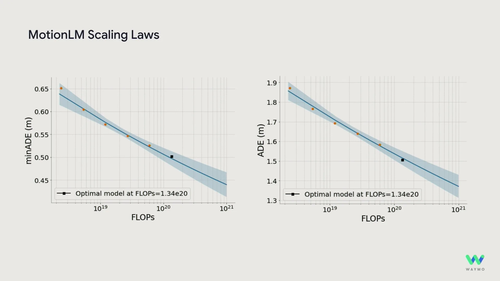
Length 1 / 2 / 4 sequence scaling charts (continued)
长度 1 / 2 / 4 序列规模图表（续）
[27:25 – 27:42]
if you have a small model, it still tries to go right but then tries to do something weird. If you have a bigger model, it will say either I'm doing right or I'm choosing a completely different mode of nudging and then actually going forward or nudging and actually turning left.
如果你有一个小模型，它仍然会尝试向右移动，但随后会尝试做一些奇怪的事情。如果你有一个更大的模型，它会说要么我做对了，要么我选择了一种完全不同的轻推模式，然后实际前进，或者轻推并实际左转。
[27:42 – 28:00]
Those extremely multimodal behaviors require a significant amount of capacity to be modeled accurately. I mentioned one of the big problems with having this intermediate representation is that we need a lot of labels.
这些极其多模态的行为需要大量的能力才能准确建模。我提到过这种中间表示的一个大问题是我们需要很多标签。
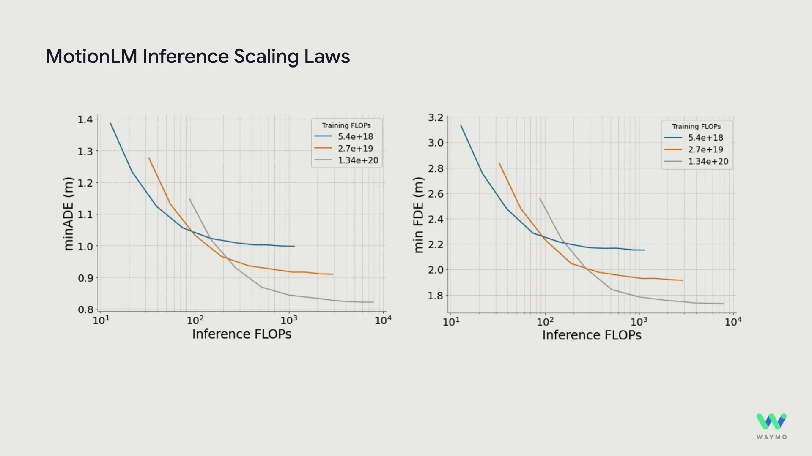
Token PerM and Inference Time/Input & Time/Step charts
每百万令牌数与推理时间/输入、时间/步 图表
[28:00 – 28:17]
The good news is that we can do a lot of autolabeling given the structure of our data. This is a very simple thing to do. We have data over time. We can aggregate the 3D bounding boxes that we get at every time step
好消息是，根据数据的结构，我们可以进行大量自动标记。这是一件非常简单的事情。我们有一段时间内的数据。我们可以聚合每个时间步获得的 3D 边界框
[28:17 – 28:39]
and reason about them jointly and be able to use those sequences to improve the labels of any specific bounding boxes. We have a lot of bounding boxes. We can do better. There is an interesting aspect here
并联合推理它们，并能够使用这些序列来改进任何特定边界框的标签。我们有很多边界框。我们可以做得更好。这里有一个有趣的方面
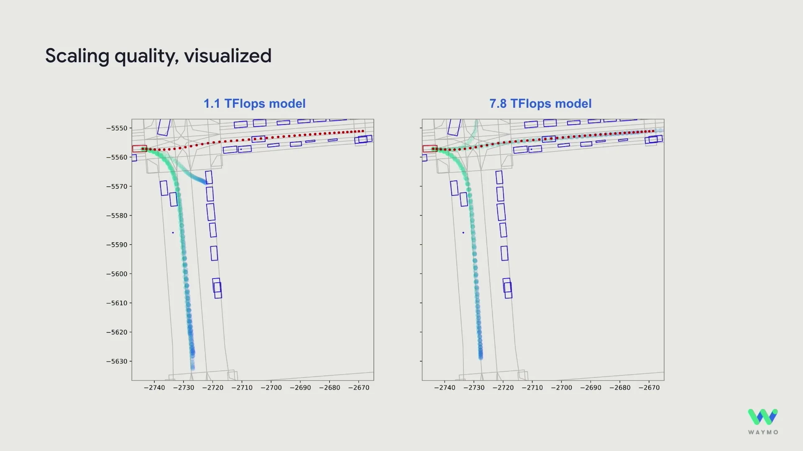
TFLOPs/model charts for different sequence lengths
不同序列长度的 TFLOPs/模型 图表
[28:39 – 28:56]
that we have very good motion prediction models. We are doing a lot of work forecasting where the different agents will be. We can use those models to actually predict where the different points in the point cloud may end up as a result of this.
我们有非常好的运动预测模型。我们正在做大量工作来预测不同代理的位置。我们可以使用这些模型来实际预测点云中不同点可能最终出现的位置。
[28:56 – 29:16]
Imagine you are teleporting points in the point cloud to their future location and generating new virtual points that correspond to where the agents may be. You are not sure. Those are not hard detection points.
想象一下，您正在将点云中的点传送到它们的未来位置，并生成与代理可能所在位置相对应的新虚拟点。你不确定。这些不是硬检测点。
[29:16 – 29:34]
They are only virtual, but they actually may inform where an agent may be in the future. If you train your model to reason about those, you may be able to get a lot better performance. This is an example where adding this concept
它们只是虚拟的，但它们实际上可以告知特工未来可能在哪里。如果你训练你的模型来推理这些，你可能会获得更好的性能。这是添加这个概念的示例
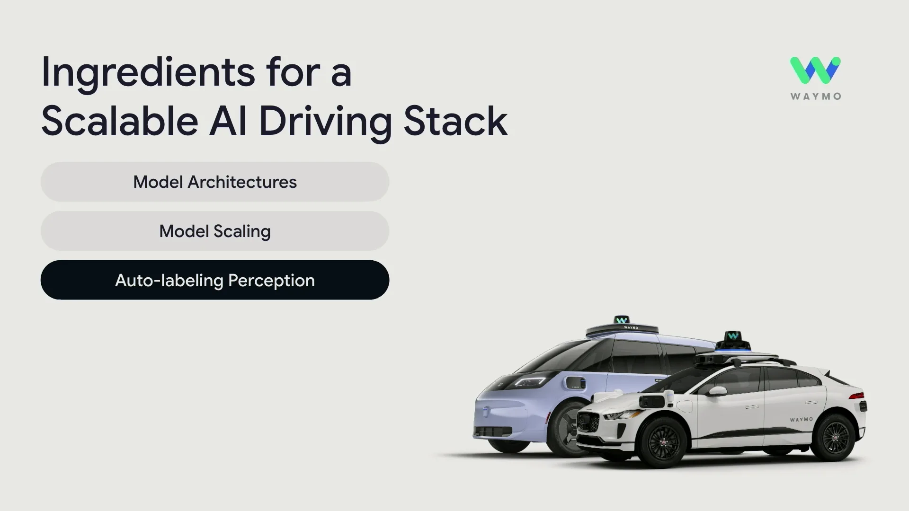
The foundations for a Scalable AI Driving Stack — Model Architectures / Model Scaling / Auto-labeling Perception
可扩展 AI 驾驶栈的基础——模型架构 / 模型规模化 / 自动标注感知
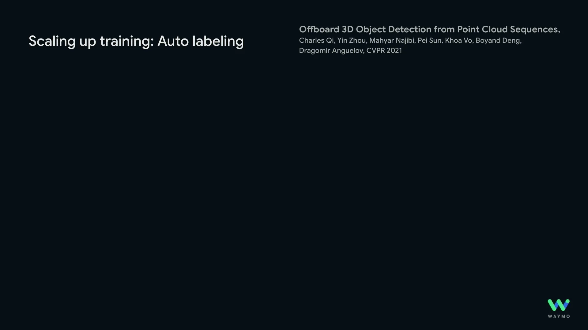
Section transition
章节过渡
[29:34 – 29:50]
of motion forecasting, we call that MODAR, to the system really improves the recall of the difference of the system. Again, you have a point cloud sequence. You look at the past.
运动预测，我们称之为MODAR，对系统确实提高了系统差异的召回率。同样，您有一个点云序列。你看看过去。
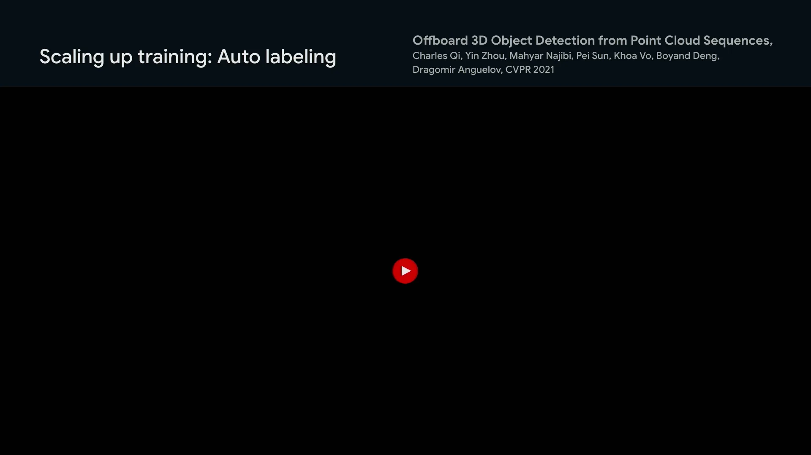
Section transition
章节过渡
[29:50 – 30:03]
You look at the future. You teleport your points, and then you run it through a tracker or motion forecasting. You teleport your points. You add them to the entire system,
你看看未来。您传送您的点，然后通过跟踪器或运动预测来运行它。你传送你的点。您将它们添加到整个系统中，
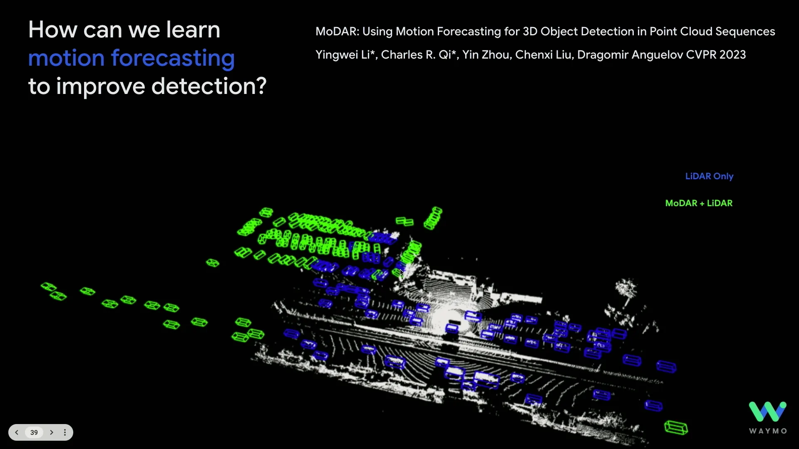
How to improve detection? (point cloud scene)
如何提升检测？（点云场景）
[30:03 – 30:19]
and then you train a model that detects from both of them. That works extremely well. This is an example on multiple different backbones that are meant to be doing 3D bounding box detection.
然后你训练一个模型来检测它们。这非常有效。这是一个关于多个不同主干网的示例，这些主干网旨在进行 3D 边界框检测。
[30:21 – 30:35]
Since it's just creating new points, you can train using the exact same architecture that you would train otherwise and get much better performance as a result. It's really important. It's really useful in specific scenarios
由于它只是创建新点，因此您可以使用与其他方式训练完全相同的架构进行训练，从而获得更好的性能。这真的很重要。在特定场景下确实很有用
[30:35 – 30:48]
where you have occlusions. Here is an example of a point cloud where you have a card that drives in front of another one, and so you end up not having any LIDAR points behind the card that's passing in front of it.
有遮挡的地方。这是一个点云示例，其中一张卡在另一张卡前面行驶，因此最终在经过它前面的卡后面没有任何激光雷达点。
[30:48 – 31:04]
But because the system implicitly knows that a car is not going to disappear completely, dematerialized just because another car went in front of it, you still have those points that are in the environments. You model them using MODAR, and you know that the car is still there
但是因为系统隐含地知道一辆车不会完全消失，不会仅仅因为另一辆车在它前面就消失，所以你仍然拥有环境中的那些点。您使用 MODAR 为它们建模，并且您知道汽车仍然在那里
[31:04 – 31:08]
and is not just flickering in and out of existence.
并且不只是忽隐忽现的存在。
[31:11 – 31:30]
We can also use the fusion of LIDAR and cameras to do auto-labeling, very complementary information, lots of semantics coming from the camera, lots of geometry coming from the LIDAR. It's extremely powerful as a combination.
我们还可以利用激光雷达和相机的融合来进行自动标记，非常互补的信息，来自相机的大量语义，来自激光雷达的大量几何图形。作为一个组合，它的威力非常强大。
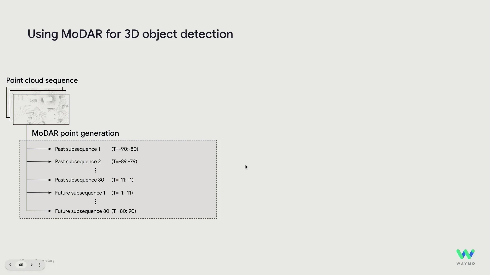
Multi-shot sequence: Multi-shot generation architecture
多镜头序列：多镜头生成架构
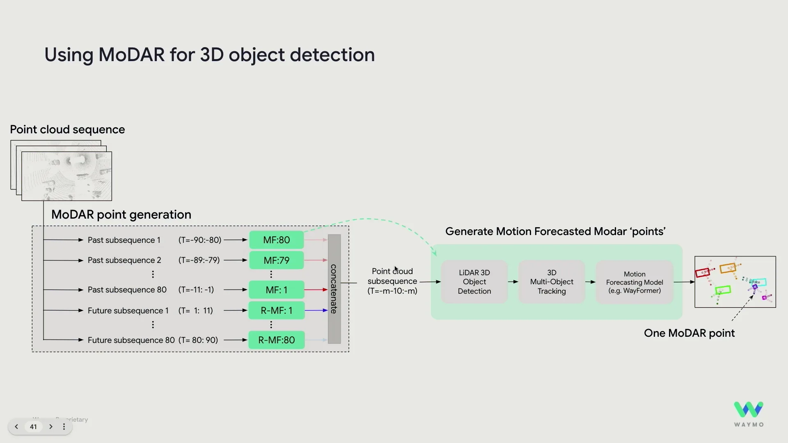
Headway Motion Bigram Model — vehicle trajectory + GPS
车头时距运动双字模型——车辆轨迹 + GPS
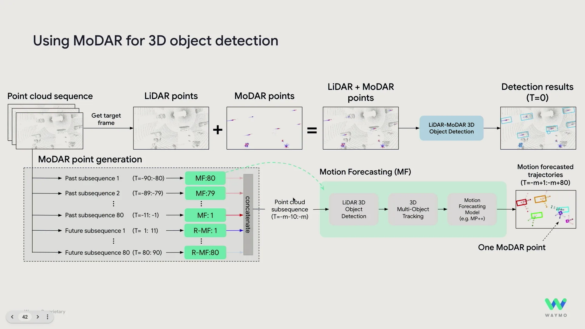
Extended pipeline with detection & simulation modules
加入检测与仿真模块的扩展流水线
自动标注感知：如何提升 3D 检测
- 用多镜头序列（multi-shot sequence）生成更丰富监督
- Headway Motion Bigram Model 加入车头时距运动先验
- 扩展流水线接入 3D 检测器与仿真模块
[31:30 – 31:48]
You end up with scenes that are completely automatically annotated and labeled that basically combine what you can see and the identity of the objects and very precise geometry.
您最终会得到完全自动注释和标记的场景，这些场景基本上结合了您所看到的内容以及对象的身份和非常精确的几何形状。
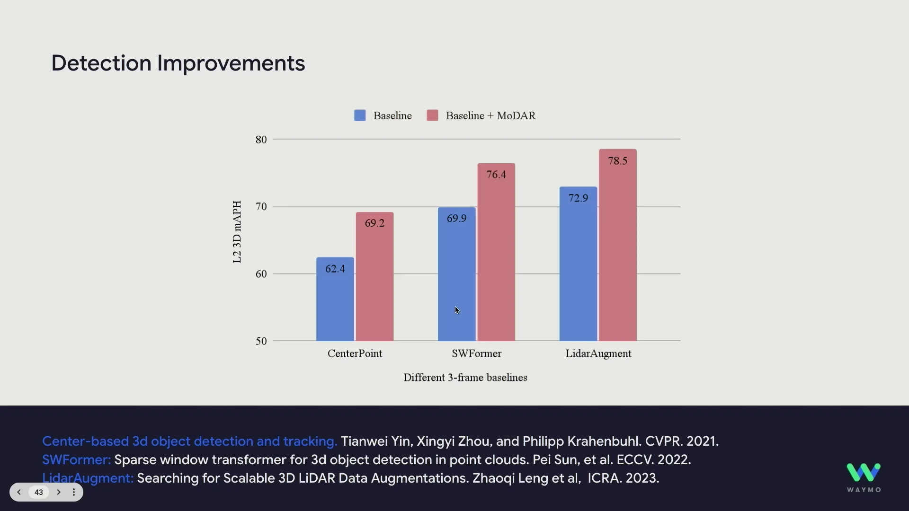
At-every-frame Vision Encoder bar chart
每帧视觉编码器柱状图
[31:55 – 32:05]
Another really nice feature of having an agent that operates in the real world is that you can start thinking about closed-loop training and actually doing some reinforcement learning.
拥有在现实世界中运行的代理的另一个非常好的功能是，您可以开始考虑闭环训练并实际进行一些强化学习。
[32:07 – 32:20]
A lot of the models that we train are trained on demonstration data, human drivers, for example, we can do a lot of imitation based on that data, and that's really, really effective. You get a lot of realism of the behaviors,
我们训练的很多模型都是根据演示数据（例如人类驾驶员）进行训练的，我们可以根据这些数据进行大量模仿，这非常非常有效。你会得到很多真实的行为，
[32:20 – 32:37]
you don't need to do any fancy reward design. The challenge is that it's not very good at understanding counterfactuals, things that you never see in practice or that you haven't seen yet or are reasoning about unexpected events,
你不需要做任何花哨的奖励设计。挑战在于它不太擅长理解反事实，即你在实践中从未见过的东西，或者你还没有见过的东西，或者正在推理意外事件的东西，
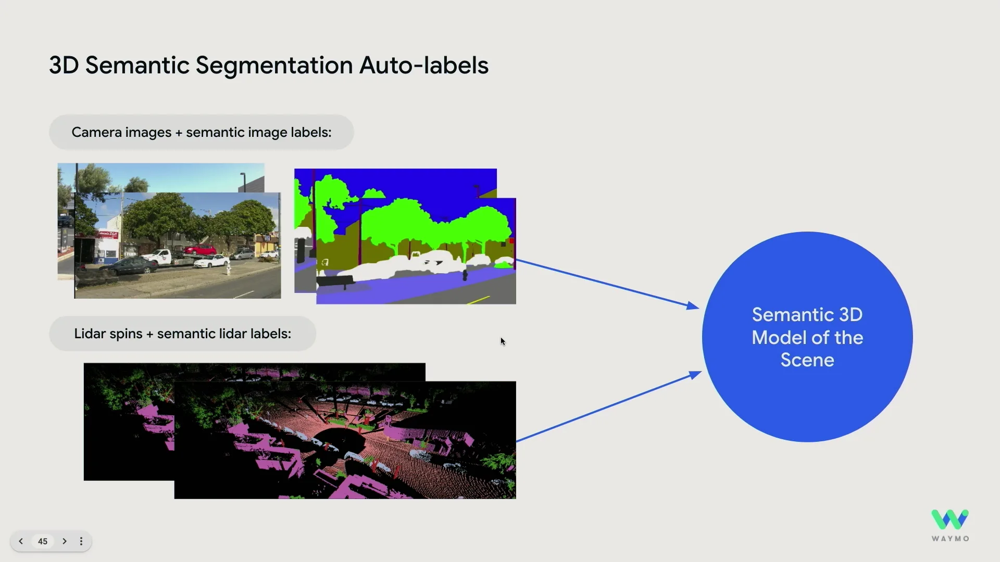
Constraint: vehicle target → Sequence 3D detector
约束：车辆目标 → 序列 3D 检测器
[32:37 – 32:59]
the unknown unknowns. The reinforcement learning on the flip side, you always have the challenge of designing the right reward function, but then you can get those kind of closed-loop feedback. We've been working on basically doing both,
未知的未知数。另一方面，在强化学习中，你总是面临着设计正确的奖励函数的挑战，但随后你可以获得那种闭环反馈。我们基本上一直在努力做到这两点，
Section transition
章节过渡
[32:59 – 33:17]
and the very simple setup where you can do both is you can imagine when you're in distribution you want to be essentially doing behavior cloning and as soon as you identify that you're out of distribution you can use a reinforcement learning method like an actocratic method.
可以同时执行这两种操作的非常简单的设置是，您可以想象，当您处于分发状态时，您本质上希望进行行为克隆，一旦您发现自己不再处于分发状态，您就可以使用强化学习方法，例如行动方法。
[33:17 – 33:37]
It's a very simple setup, but it's surprisingly effective. This is an example of comparing a behavior clone model with these BCSAC models. In a very simple scenario, you have a person getting out of their car. In the first case, the autonomous vehicle
这是一个非常简单的设置，但效果却出奇的好。这是将行为克隆模型与这些 BCSAC 模型进行比较的示例。在一个非常简单的场景中，一个人下了车。在第一种情况下，自动驾驶汽车
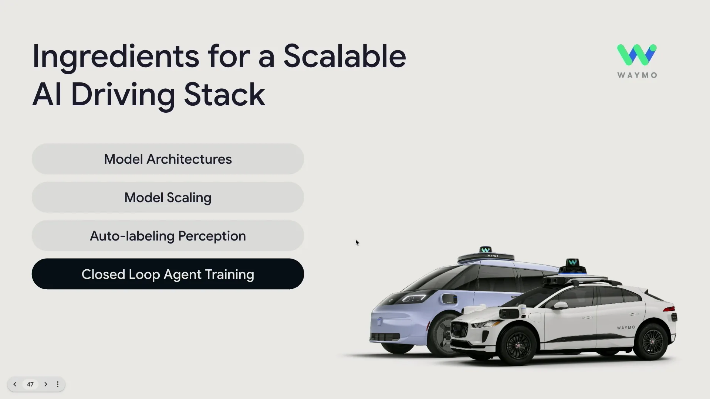
The foundations for a Scalable AI Driving Stack — Model Architectures / Model Scaling / Auto-labeling Perception / Closed-Loop Agent Training
可扩展 AI 驾驶栈的基础——模型架构 / 模型规模化 / 自动标注感知 / 闭环智能体训练
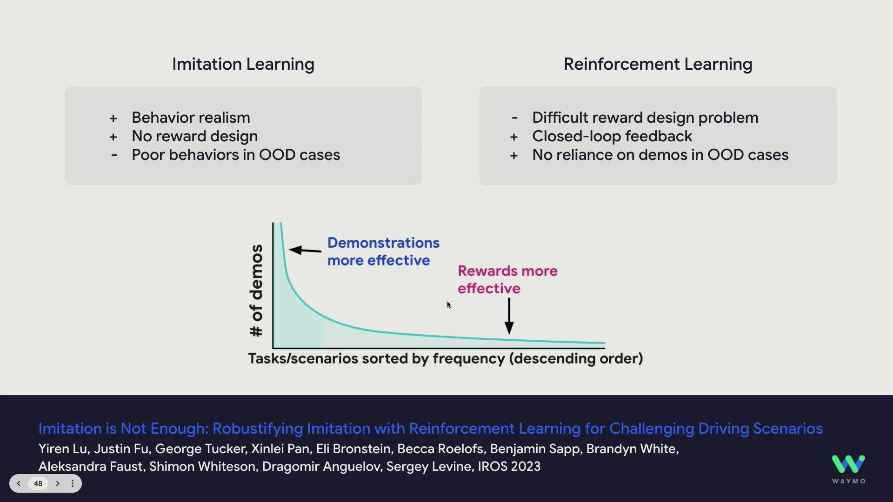
Behavior unreproducibility at high level — difficult closed-design problem; closed-loop validation; no reference to detector in CLOSED cases
高层级上的「行为难以复现」——闭环设计难题；闭环验证；在闭环场景中缺少对检测器的参照
[33:37 – 33:50]
will nudge very close to it and not really reason about the fact that there is a person getting out their car there. With the reinforcement learning system we can actually nudge away from the person.
会轻推它非常接近它，并且不会真正推理有人从那里下车的事实。通过强化学习系统，我们实际上可以远离这个人。
[33:53 – 33:59]
We've been working a lot on bringing VLMs and LLMs into the picture.
我们一直在努力将 VLM 和 LLM 纳入考虑范围。
[34:01 – 34:09]
This is really exciting to me because there is a lot of outside knowledge that we can leverage for driving.
这对我来说真的很令人兴奋，因为我们可以利用很多外部知识来驾驶。
[34:12 – 34:27]
This is a meme by now, but this is exactly the kind of questions that we would want an autonomous vehicle to be able to answer. Where can you go? What can you do in a world that has been...
现在这已经是一个模因了，但这正是我们希望自动驾驶汽车能够回答的问题。你能去哪里？在一个已经...的世界里，你能做什么？
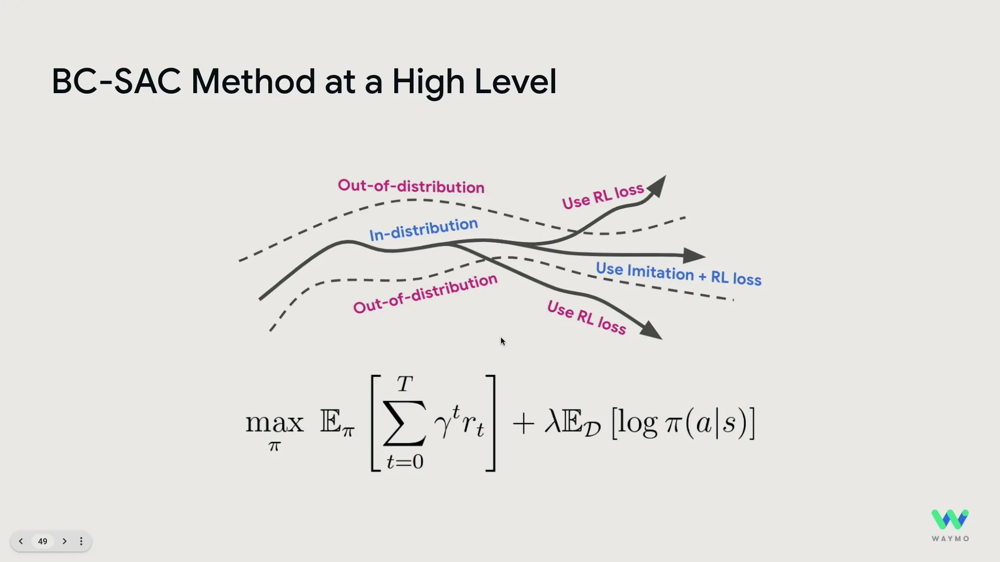
Wasserstein-loss style formula
Wasserstein 损失公式
[34:28 – 34:43]
I want to say designed for humans, but sometimes you wonder if it's really been designed for humans. You also want to be able to understand more generally scenes and environments and context. VLMs are actually very good at this.
我想说是为人类设计的，但有时你会怀疑它是否真的是为人类设计的。您还希望能够更普遍地理解场景、环境和背景。 VLM 实际上非常擅长这一点。
[34:43 – 34:59]
This is an example of a car that's upside down and the VLMs are able to identify not only what's happening on the scene but what you should be doing about it. It's able to say, hey, follow emergency personnel, slow down.
这是一个倒置汽车的示例，VLM 不仅能够识别现场发生的情况，还能识别您应该采取的措施。它可以说，嘿，跟随急救人员，放慢速度。
[34:59 – 35:13]
The most important thing is avoiding hindering the emergency response. That's totally spot on. That's exactly the kind of information that we want to be able to incorporate into the system in the best way we can.
最重要的是避免妨碍应急响应。这完全是对的。这正是我们希望能够以最好的方式纳入系统的信息。
[35:13 – 35:28]
We can do lots of things. Again, the very simple thing is using VLMs for zero shots, labeling and label distillation. You're able to identify very precise things like this is a Jeep,
我们可以做很多事情。同样，非常简单的事情是使用 VLM 进行零次注射、贴标和标签蒸馏。你能够识别非常精确的东西，比如这是一辆吉普车，
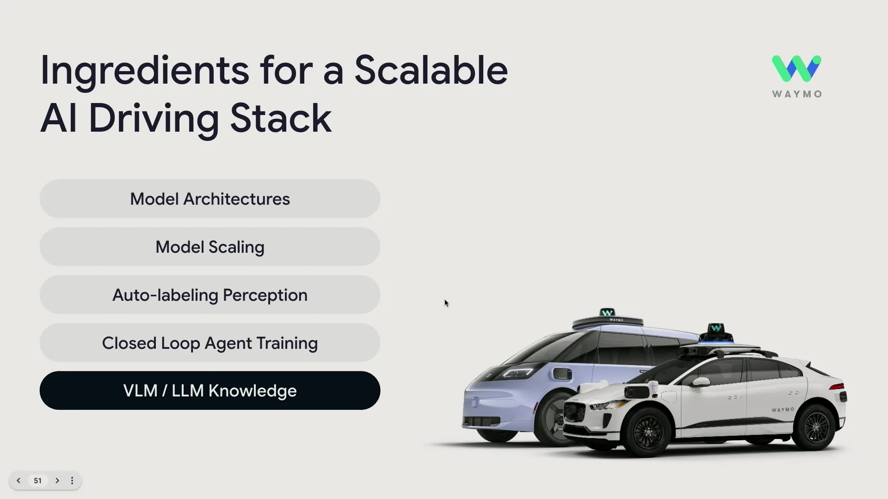
The foundations for a Scalable AI Driving Stack — Model Architectures / Model Scaling / Auto-labeling Perception / Closed-Loop Agent Training / S2K LLAMs/Settings
可扩展 AI 驾驶栈的基础——模型架构 / 模型规模化 / 自动标注感知 / 闭环智能体训练 / S2K 大模型设置
闭环智能体训练与行为复现性
- 闭环设计的难点：高层级行为难以稳定复现
- 闭环验证 + Wasserstein 风格损失约束
- S2K 大模型设置用于闭环策略学习
真值完备性与城市驾驶评测
- 如何衡量 ground truth 的完备性本身
- 城市驾驶评测用例（street scene 标注）
- 让 NLP/标注说明与密集检测标注在重叠区域对齐
[35:28 – 35:49]
this is a bulldozer, and map it onto the various points in your LiDAR outputs. We can do motion prediction using multimodal inputs. This is work that we've done using a Gemini model that we've fine-tuningd on autonomous driving data.
这是一台推土机，并将其映射到激光雷达输出中的各个点。我们可以使用多模态输入进行运动预测。这是我们使用 Gemini 模型完成的工作，我们已根据自动驾驶数据对该模型进行了微调。
How to measure the ground truth completeness?
如何衡量真值的完备性？
Urban street scene for evaluation
用于评估的城市街道场景
[35:49 – 36:03]
We input high-level commands. We input the context, the ego status of the car. We input the camera views and send that to a large vision language model to predict future waypoints.
我们输入高级命令。我们输入上下文，即汽车的自我状态。我们输入摄像机视图并将其发送到大型视觉语言模型以预测未来的航路点。
Aligning notes (NLP/Annotation guidance) with dense overlaps of detection annotation
让标注说明与密集检测标注在重叠区域对齐
[36:05 – 36:20]
This works amazingly well. This is a slightly old benchmark so take it with a grain of salt, but we show that we're at least no worse than any of the hand-tuned and very bespoke systems out there.
这效果出奇的好。这是一个有点旧的基准，所以请持保留态度，但我们表明我们至少不比任何手动调整和非常定制的系统差。
[36:20 – 36:33]
This is a really good starting point and I think there is a lot more we can do with models at scale there that are pre-trained on large foundational data.
这是一个非常好的起点，我认为我们可以利用在大型基础数据上预先训练的大规模模型做更多的事情。
[36:36 – 36:52]
One thing we can do with those models is chain of thought reasoning. In the context of driving, being able to reason about the critical objects in the scene, attend to them, reflect on them,
我们可以用这些模型做的一件事是思想推理链。在驾驶过程中，能够推理场景中的关键物体，关注它们，反思它们，
City-Cars data domain overview
City-Cars 数据域概览
City-Cars 数据域与多镜头检测增益
- City-Cars 数据域概览（专注于城市级车辆交互）
- 多镜头检测相对单镜头的增益表
- 关键边 / 平均下降 / 行为下降 / 行为改进 汇总
[36:52 – 37:07]
understanding the behavior of the agents in the scene, having a bit of a meta-decision about what you're going to do, like not just say, okay, I'm just going to try to show you to point X, Y on the scene,
了解场景中代理的行为，对要做什么进行一些元决策，就像不只是说，好吧，我只是尝试向您展示场景中的 X、Y 点，
Multi-shot detection gains (model variants table)
多镜头检测增益（模型变体表）
[37:07 – 37:22]
but say, hey, here I'm going to wait or here I'm going to nudge or here I'm going to drive forward. Having this kind of high-level answer to the context and the situation and then use that as a basis for execution
但是要说，嘿，我要在这里等待，或者我要在这里轻推，或者在这里我要向前行驶。对上下文和情况做出这种高层次的回答，然后将其作为执行的基础
[37:22 – 37:42]
is that's how we reason about difficult scenarios. We have an intent that we express very concisely that is not expressed just as a trajectory. Being able to do this kind of high-level chain of thoughts to actually produce behaviors can be very powerful. We've actually shown that if you do incorporate
这就是我们推理困难场景的方式。我们有一个非常简洁地表达的意图，而不仅仅是以轨迹的形式表达。能够通过这种高层次的思想链来实际产生行为是非常强大的。我们实际上已经证明，如果你确实合并了
Critical-edge / mean-decrease / behavior-decrease / behavior-improvement summary
关键边 / 平均下降 / 行为下降 / 行为改进 汇总
[37:42 – 37:59]
these pieces of information into the prompt and reflect on it, you get relative improvements over just issuing trajectories directly. I think that's a really interesting direction to be exploring more.
将这些信息输入到提示中并进行反思，与直接发布轨迹相比，您会得到相对的改进。我认为这是一个非常有趣的方向，值得进一步探索。
[37:59 – 38:15]
Those models are large. They can support a lot of multitask reasoning. Just predicting trajectories is one thing, but we can detect objects, put three bounding blocks around things, understanding lane and producing lane information.
那些模型很大。它们可以支持很多多任务推理。仅仅预测轨迹是一回事，但我们可以检测物体，在物体周围放置三个边界块，理解车道并生成车道信息。
Improving detection via random masking, behavior improvement, detection re-anchoring, sequential flashboard
通过随机掩码、行为改进、检测重新锚定、序列看板提升检测
[38:15 – 38:38]
There's a ton of tasks that can fall out of this. He can train them jointly. They basically interfere with each other positively in the sense that they provide additional supervision to a common problem. These are simple examples of what the EMA model produces.
有大量的任务可能会因此而落下。他可以联合训练他们。它们基本上是积极地相互干扰，因为它们为共同问题提供了额外的监督。这些是 EMA 模型产生的简单示例。
[38:38 – 38:59]
The yellow is the plan. Green gives you a sense of the relative speed. The model detects the people and cars. Implicitly, it sees that there is a dog in the scene, and so it will stop in front of the dog. This is not an entity that we have trained the system
黄色的是计划。绿色让您感受到相对速度。该模型检测人和汽车。它隐含地看到场景中有一只狗，因此它会停在狗面前。这不是我们系统训练过的实体
[38:59 – 39:16]
to recognize with a precise label, but it's able to reason that this is an environment where you should be proceeding forward. Here's another example of driving in Chinatown with some people doing crazy wheelies around the car, and it's also able to reason that,
用精确的标签来识别，但它能够推断出这是一个你应该继续前进的环境。这是在唐人街开车的另一个例子，有些人在车周围做疯狂的前轮特技，它也可以推理出，
Section transition (black with red dot)
章节过渡（黑底红点）
[39:16 – 39:35]
okay, if there's something going on here, I should probably slow down and let them pass and get out of the way. Of course, just VLMs stand alone. There's a lot of work that needs to happen to be able to really take full advantage
好吧，如果这里出了什么事，我也许应该放慢速度，让他们过去，让开。当然，只有 VLM 是独立的。需要做很多工作才能真正充分利用
Section transition
章节过渡
[39:35 – 39:52]
of those kinds of architectures. You need to include all the sensors. They need to really get better at spatial reasoning. A lot of the large multimodal models have been trained on really semantic information and visual Q&A is really geared towards improving the semantics,
这些类型的架构。您需要包括所有传感器。他们需要真正提高空间推理能力。许多大型多模态模型都经过真正语义信息的训练，而视觉问答确实旨在改进语义，
[39:52 – 40:06]
not necessarily the geometry, and we want to really do better at spatial reasoning. We want to incorporate long-term memory, because if we're going to do chain-of-thought reasoning and planning, we want the full context of what's been happening,
不一定是几何学，我们希望在空间推理方面做得更好。我们想要纳入长期记忆，因为如果我们要进行思维链推理和规划，我们需要了解正在发生的事情的完整背景，
Section transition
章节过渡
[40:06 – 40:23]
and then we want to scale them and compute in terms of scaling efficiency so that they can be used fast in real time. So lots of work in that space. I think it's a really very greenfield area to be exploring.
然后我们想要扩展它们并根据扩展效率进行计算，以便它们可以实时快速使用。在这个领域有很多工作。我认为这确实是一个值得探索的全新领域。
Section transition
章节过渡
Section transition
章节过渡
展望：改进视觉-语言模型的方向
- 多模态传感器支持
- 精准空间推理
- 长期记忆
- 算力与规模化效率
[40:23 – 40:43]
So we've been working on this foundation model for Waymo where we bring together all the different sensors and perception and decode them into all the different tasks that we care about. This is an ongoing project that I'm particularly excited about
因此，我们一直在为 Way Mo 开发这个基础模型，我们将所有不同的传感器和感知结合在一起，并将它们解码为我们关心的所有不同任务。这是一个正在进行的项目，我对此感到特别兴奋
Section transition
章节过渡
Section transition
章节过渡
[40:43 – 41:07]
and that will enable us to distill all the knowledge from the driver into a system that has basically the core of what Waymo knows about the world and what it means to drive built into a system that is very flexible and can be used to supervise all of our system components.
这将使我们能够将驾驶员的所有知识提炼到一个系统中，该系统基本上具有 Way Mo 了解世界的核心知识，以及将驾驶构建到一个非常灵活且可用于监督我们所有系统组件的系统中意味着什么。
Section transition
章节过渡
Section transition
章节过渡
[41:08 – 41:29]
But at the end of the day, this is all about users. It's fun to think about the AI and the technology, but really it's a technology for a purpose. I often tell people, the reason I'm at Waymo today is that there aren't many AI products out there that people really love,
但归根结底，这都是关于用户的。思考人工智能和技术很有趣，但实际上这是一种有目的的技术。我经常告诉人们，我今天在 Way Mo 的原因是人们真正喜欢的人工智能产品并不多，
[41:29 – 41:48]
and this is one of them. Every user is really delighted by the system. We get real-time feedback, we get lots of data as well to be able to sort of train at scale and understand the world at scale. So it's been a fun environment to really engage with.
这就是其中之一。每个用户都对该系统感到非常满意。我们获得实时反馈，我们还获得大量数据，以便能够进行大规模训练并大规模了解世界。所以这是一个真正值得参与的有趣环境。
Ways to improve Vision-Language Models: multi-modal sensor support, accurate spatial reasoning, long-term memory, compute & scaling efficiency
改进视觉-语言模型的方向：多模态传感器支持、精准空间推理、长期记忆、算力与规模化效率
总结与展望
- 把驾驶栈各模块都重述为可学习的、可规模化的组件
- 下一阶段重点：闭环 + 自动标注 + VLM 协同
- NeurIPS 2024 闭幕
[41:48 – 42:09]
And then I don't have access. I lost access between last night and this morning. Anyways, this was another fun video of all sorts of things that can go wrong, but you'll have to ask me later about the kind of crazy things that you see on the road
然后我就没有访问权限了从昨晚到今天早上我失去了访问权限。无论如何，这是另一个有趣的视频，其中包含各种可能出错的事情，但是稍后你必须问我关于你在路上看到的那种疯狂的事情
[42:09 – 42:27]
when you operate at scale. You'll have to believe me, it's wild. Anyways, I want to thank you. Please stay in touch. We have a booth, booth number 138. Our curious website is there.
当您大规模运营时。你必须相信我，这很疯狂。无论如何，我想谢谢你。请保持联系。我们有一个展位，展位号是138。我们好奇的网站就在那里。
[42:27 – 42:52]
We are hiring at all levels on problems of perception, behavior, engineering, infrastructure, and yeah, feel free to reach out and talk to me later, and I'll be happy to take in questions. Thank you. Thanks, Vincent.
我们正在就感知、行为、工程、基础设施等问题进行各个级别的招聘，是的，请随时与我联系，稍后与我交谈，我很乐意回答问题。谢谢。谢谢，文森特。
Section transition
章节过渡
Neural Information Processing Systems — December 10–15, 2024, Vancouver (closing)
NeurIPS 2024 闭幕页——2024 年 12 月 10–15 日，温哥华
[42:52 – 43:10]
That was a wonderful talk and full of a lot of content. I imagine that was a lot to absorb in your six months at Waymo, so very cool. My question is pretty detailed. I'm curious about motion LM, and I think I understood it as a way to use tokens
那是一次精彩的演讲，内容非常丰富。我想你在 Way Mo 的六个月里需要吸收很多东西，非常酷。我的问题很详细。我对 Motion LM 很好奇，我想我将其理解为一种使用代币的方式
[43:10 – 43:26]
to jointly model the motion of different agents in scenes, and I was curious. A lot of your pictures were pretty busy, so it seemed like there were a lot of agents in the scenes, and I was wondering if you can give us a ballpark of how many you jointly model at once
共同模拟场景中不同智能体的运动，我很好奇。你的很多照片都非常繁忙，所以场景中似乎有很多经纪人，我想知道你是否可以给我们一个大概的数据，告诉我们你们同时共同模特了多少人
[43:26 – 43:42]
and if there are any interesting tricks to sample from the different modes of that distribution of the behaviors. That's a very good question that I haven't been able to get an answer to in the last six months. So, no, I don't know the details of this.
以及是否有任何有趣的技巧可以从行为分布的不同模式中进行采样。这是一个非常好的问题，但在过去的六个月里我一直无法得到答案。所以，不，我不知道这件事的细节。
[43:42 – 43:58]
As you know, it's a very multi-agent, multi-model problem, so you have a combinatorial explosion of different interactions. You could imagine, and I don't know for sure, you could imagine wanting to model jointly agents that are known to be interacting,
如您所知，这是一个非常多主体、多模型的问题，因此您会遇到不同交互的组合爆炸。你可以想象，我不确定，你可以想象想要对已知相互作用的联合代理进行建模，
[43:58 – 44:14]
and so, yeah, you can probably validate very quickly which ones are relatively independent from each other and which ones are likely to interact. Again, this is a knob that can be tuned depending on the amount of compute you have, and there is actual performance scaling laws
所以，是的，你可以很快验证哪些是相对独立的，哪些是可能相互作用的。同样，这是一个可以根据您拥有的计算量进行调整的旋钮，并且存在实际的性能缩放法则
[44:14 – 44:32]
that you can derive from this. You would have to ask the folks who have been working on the project to get a more authoritative answer. Great. Thanks so much. Hi, Vincent. Excellent talk. I had a question about how AVs interact with other AVs,
你可以从中得出。您必须询问一直致力于该项目的人员才能获得更权威的答案。伟大的。非常感谢。嗨，文森特。非常棒的演讲。我有一个关于 AV 如何与其他 AV 交互的问题，
[44:32 – 44:50]
like Waymo cars interacting with others. Do they, when they're closed, do they do joint planning, or is it still just treated as another human driver? It's a very interesting problem in and of itself. I don't know if you've read the news, I think it was a month or two ago,
就像 Way Mo 汽车与其他汽车互动一样。当他们关闭时，他们是否会进行联合规划，或者仍然只是将其视为另一个人类司机？这本身就是一个非常有趣的问题。不知道你有没有看过这个新闻，我想是一两个月前的事了，
[44:50 – 45:08]
one of the issues with scaling. We had depot where we had lots of our Waymo cars that went to park and get recharged, and as we scaled up the depot, the Waymos started to interfere negatively with each other, and specifically, at night,
缩放问题之一。我们有一个停车场，里面有很多 Way Mo 汽车，它们会去停车并充电，随着我们扩大停车场的规模，Way Mo 开始互相干扰，特别是在晚上，
[45:08 – 45:31]
they would start honking at each other because they would always try to nudge each other out of the way. So that was a fun scaling problem to have that we did solve eventually. It was mostly just something that we had observed prior to that. There is a lot of potential to really improve things
他们会开始互相按喇叭，因为他们总是试图把对方推开。所以这是一个有趣的扩展问题，我们最终确实解决了。这主要是我们之前观察到的事情。有很大的潜力可以真正改善事情
[45:31 – 46:05]
by having the cars sort of know about each other to some degree. One thing I'm excited about is how AVs can actually improve traffic for everyone without needing to interact with each other. There's been some fascinating studies led by Alex Bayan at Berkeley where they showed that even if you have like 5% or 10% of traffic that is autonomous in an environment,
让汽车在某种程度上相互了解。让我感到兴奋的一件事是自动驾驶汽车如何能够真正改善每个人的流量，而无需彼此交互。伯克利的 Alex Bayan 领导了一些有趣的研究，研究表明，即使环境中有 5% 或 10% 的流量是自主的，
[46:05 – 46:29]
you can really eliminate a lot of the bottlenecks and traffic jams in the environment by just having a limited fraction of very good and calm drivers, essentially, that are respecting distances and that are behaving well. They actually tested that in the real world and the results were very positive.
只需拥有有限一部分非常优秀且冷静的驾驶员（本质上讲，他们尊重距离并且表现良好），就可以真正消除环境中的许多瓶颈和交通拥堵。他们在现实世界中进行了实际测试，结果非常积极。
[46:29 – 46:55]
So I'm excited about just sort of improving the traffic for everybody without requiring a lot of deep interactions between the cars. Question for you. How do you anticipate model development in the future? How does the Waymo roadmap kind of skate to where the puck is going and acknowledge that model capabilities will be transformed dramatically
因此，我很高兴能够改善每个人的交通状况，而不需要汽车之间进行大量深入的互动。向你提问。您如何预测未来的模型开发？ Way Mo 路线图如何滑向冰球前进的方向并承认模型功能将发生巨大转变
[46:55 – 47:13]
six months a year, 18 months, five years from now? And what does that look like technologically, but also what does that look like in convincing your peers and your colleagues, hey, this might sound radical, but please expect this to be possible three years from now and how do we plan for it?
一年六个月、十八个月、五年后？这在技术上看起来是什么样子，而且在说服你的同行和同事方面又是什么样子，嘿，这可能听起来很激进，但请预计三年后这将成为可能，我们如何计划呢？
[47:13 – 47:37]
So I have a slightly longitudinal view of this. I started working, collaborating with Waymo a bit more than 10 years ago in the early days of deep learning when I was still at Google. And over the past sort of 10 plus years, I've kind of seen how Waymo has ridden a number of technology waves
所以我对此有一个稍微纵向的看法。十多年前，当我还在 Google 工作时，在深度学习的早期阶段，我就开始与 Way Mo 合作。在过去的 10 多年里，我已经看到了 Way Mo 如何驾驭许多技术浪潮
[47:37 – 47:52]
that had to happen, right? So very, very early, early days, no deep learning whatsoever. It just wasn't on the picture yet, right? It was all out of those cascades to do, you know, very basic pedestrian detection.
那是必然发生的，对吧？所以非常非常早期，还没有任何深度学习。只是照片上还没有出现，对吧？你知道，这一切都是通过这些级联来完成非常基本的行人检测。
[47:52 – 48:19]
That was before it was Waymo even was when it was a secret project within Google. And we came in at the time with Alex Krzyzewski and a few folks that had been pioneers in deep learning and sort of brought the deep learning stack to Waymo at the time. I've seen this over and over, that the company has been kind of always gone after the latest wave
那是在 Way Mo 出现之前，甚至当时它还是谷歌内部的一个秘密项目。当时我们和 Alex Krzyzewski 以及一些深度学习领域的先驱者一起加入，他们当时将深度学习堆栈带到了 Way Mo。我一遍又一遍地看到这一点，该公司总是追赶最新的浪潮
[48:19 – 48:36]
of technology improvements and modernizing. And when I came in six months ago, you know, I was expecting to land in a company that's been around for 10 years, so like with tons of skeletons everywhere, of like, you know, outdated technology everywhere. It wasn't the case.
技术改进和现代化。当我六个月前进来的时候，你知道，我本来希望加入一家已经存在了 10 年的公司，所以就像到处都是大量的骷髅一样，你知道，到处都是过时的技术。事实并非如此。
[48:36 – 49:00]
There is a lot of complexity in the system, but a lot of it is really sort of basically at the level of state of the art and trying to push forward. So the company as a whole has been extremely healthy about chasing the innovation in a way that does not detract from, you know, operations and being able to build the business,
该系统有很多复杂性，但其中很多实际上基本上处于最先进的水平并试图向前推进。因此，公司作为一个整体，在追求创新方面一直非常健康，而不会影响运营和建立业务的能力，
[49:00 – 49:26]
but also being sort of very aware that we are building this at a time where the technology is evolving rapidly and we need to be nimble to be able to sort of be opportunistic about where the technology is taking us. Hi. Thank you for the very interesting talk. In making a MLM like Emma, presumably you don't just decode text tokens
但我们也非常清楚，我们是在技术快速发展的时代构建这个产品的，我们需要灵活地把握技术将我们带往何处的机会。你好。谢谢你的非常有趣的谈话。在制作像艾玛这样的传销时，想必你不只是解码文本标记
[49:26 – 49:51]
and put it in charge of the wheel and put customers behind it directly. So I'm curious to hear about how MLMs like that can interact with the current production stack and like maybe pride at hints or how those two can work together. Yeah. So, MI is a research project right now, right? It's not connected to any of the things that are driving on the road.
并让它负责方向盘，并直接将客户放在其后面。因此，我很好奇像这样的传销如何与当前的生产堆栈交互，以及可能对提示感到自豪或这两者如何协同工作。是的。那么，MI 现在是一个研究项目，对吗？它与路上行驶的任何东西都没有联系。
[49:51 – 50:16]
There are different ways that we can transfer the information. It can be as a form of supervision, for example, as a teacher model that can be, as the information distilled into a model on board that will sort of have all the guardrails and all the safety components built in, but still benefit from the flexibility.
我们可以通过不同的方式传输信息。它可以作为一种监督形式，例如，作为一种教师模型，可以将信息提炼成船上的模型，该模型将内置所有护栏和所有安全组件，但仍然受益于灵活性。
[50:16 – 50:40]
There are different integration points that can happen. It's not just throw a trajectory at the controller and hope that it's going to do the right thing. This is absolutely not the right way of thinking about this. There's a number of indirect ways in which those kinds of very good supervision signals can be used into the system.
可能会发生不同的集成点。它不仅仅是向控制器抛出一条轨迹并希望它能做正确的事情。这绝对不是正确的思考方式。可以通过多种间接方式将这些非常好的监控信号用于系统中。
[50:40 – 51:04]
It's, yeah, they're building a safety system around AI components. That's our bread and butter. That's exactly, that's all that we think about all the time is how do we incorporate learned approaches in a way that has very, very strong guarantees that enables us to trust the system, to validate it,
是的，他们正在围绕人工智能组件构建一个安全系统。这就是我们的面包和黄油。正是如此，我们一直在思考的就是如何以一种具有非常非常强大保证的方式整合学到的方法，使我们能够信任系统，验证它，
[51:04 – 51:22]
and to convince ourselves and the rest of the world that this is actually a safe system. Yeah, thanks for the great talk. I was curious about how you're thinking about generalization in Waymo. So right now, you can have these systems in California,
并让我们自己和世界其他地方相信这实际上是一个安全的系统。是的，谢谢你的精彩演讲。我很好奇您如何看待 Way Mo 的泛化。所以现在，你可以在加利福尼亚州拥有这些系统，
[51:22 – 51:37]
but let's say driver behaviors would be different in the Canadian Rockies, or if you're driving in India, there's more people just honking and then communicating through audio. So, Nautic, are you thinking about models which can just, one system just rules them all,
但假设在加拿大落基山脉，司机的行为会有所不同，或者如果你在印度开车，会有更多的人只是按喇叭，然后通过音频进行交流。那么，Nautic，你是否正在考虑可以用一个系统来统治所有这些的模型，
[51:37 – 51:54]
or are you thinking about identifying different clusters based on the data, and then you have these kind of tuned systems for different kinds of cities? Yeah, we want to be important to think about the approach that we take. Thus far, we have one system that has been able to scale
或者您是否正在考虑根据数据识别不同的集群，然后为不同类型的城市提供这些经过调整的系统？是的，我们希望认真思考我们所采取的方法。到目前为止，我们拥有一个能够扩展的系统
[51:54 – 52:11]
and expand to the different geos that we are, and every time we go to a different place, we evaluate how is our system doing, our current system doing, what modifications do we have to make to make it work as well or better in the new environment,
并扩展到我们所在的不同地理区域，每次我们去不同的地方，我们都会评估我们的系统表现如何，我们当前的系统在做什么，我们必须进行哪些修改才能使其在新环境中正常工作或更好，
[52:11 – 52:34]
and does that scale income from just retraining models or implementing things differently? There are a lot of bespoke things that need to happen just purely from a regulation standpoint in different parts of the world. And so, it has to be really on a case-by-case basis.
这是否会通过重新培训模型或以不同的方式实施来扩大收入？纯粹从世界不同地区的监管角度来看，有很多定制的事情需要发生。因此，必须根据具体情况具体分析。
[52:34 – 53:01]
Thus far, the system has been remarkably good at generalizing essentially the old shot to the different areas that we've been expanding to with some updates based on the different circumstances. But my hope is that we can scale without having to do a lot of engineering
到目前为止，该系统非常善于将旧镜头推广到我们一直扩展到的不同区域，并根据不同情况进行一些更新。但我希望我们能够扩展规模而无需进行大量工程设计
[53:01 – 53:22]
and just have the best driver overall. Hey, Vincent, thank you for a great talk. And I have a question about the spatial reasoning capabilities of VOMs, and I think it's a very new and emerging area. So, I imagine there are two possible ways to do this. So, one way is we can train VOM on a bunch
并拥有最好的车手。嘿，文森特，谢谢你的精彩演讲。我对 VOM 的空间推理能力有疑问，我认为这是一个非常新的新兴领域。所以，我想有两种可能的方法可以做到这一点。所以，一种方法是我们可以在一堆上训练 VOM
[53:22 – 53:42]
of spatial vehicle APIs, and that will answer the questions. And another possible way is to reconstruct the exploits and to explicitly reconstruct the 3D scene, and then that may be agents to reason about their distance and some orientation between two objects
空间车辆 API，这将回答这些问题。另一种可能的方法是重建漏洞并显式重建 3D 场景，然后代理可以推断两个对象之间的距离和方向
[53:42 – 54:04]
and by using some external APIs or external tools. So, which way do you think maybe a more robust or a better way in the context of autonomous driving? Yeah, I'm hoping people will explore both, honestly. I think this is a really important problem. The computer vision community has fallen in love
以及使用一些外部 API 或外部工具。那么，您认为在自动驾驶的背景下哪种方式可能更稳健或更好？是的，老实说，我希望人们能够探索两者。我认为这是一个非常重要的问题。计算机视觉社区已坠入爱河
[54:04 – 54:22]
with high-level semantics, and it's great. We can really do very high-level descriptions and understanding of scenes and contexts and things like this. But a lot of what the industry is asking for is a bit more bread and butter. And it's even not stopping at the pixels.
具有高级语义，这很棒。我们确实可以对场景、上下文以及类似的事情进行非常高级的描述和理解。但该行业所要求的很多是更多的面包和黄油。它甚至不仅仅停留在像素上。
[54:22 – 54:46]
The pixels are the first layer in the state estimation stack. We want to know about the world. We want to know about where things are and how things are behaving in the real world. And so connecting the kind of pixel labels to the actual reality in the 3D world is a huge deal.
像素是状态估计堆栈中的第一层。我们想了解这个世界。我们想知道事物在现实世界中的位置以及行为方式。因此，将像素标签与 3D 世界中的实际情况联系起来是一件很重要的事情。
[54:46 – 55:04]
And there's not been, I think, enough emphasis on this in the past. So your two directions are on point. I think you can really sort of start creating tasks that are a lot more about geometry than they are about semantics, and you obviously want both.
我认为过去对此没有给予足够的重视。所以你的两个方向都是正确的。我认为你真的可以开始创建更多关于几何而不是语义的任务，而且你显然想要两者。
[55:04 – 55:24]
Or you can also build models that are being asked to actually reconstruct the environment with proper geometry and proper spatial relationships. I think both are very valid lines of approach. It's a really good question, which one is going to be the most scalable.
或者，您也可以构建模型，要求其使用适当的几何形状和适当的空间关系实际重建环境。我认为两者都是非常有效的方法。这是一个非常好的问题，哪一个最具可扩展性。
[55:24 – 55:40]
Because you can imagine the reconstruction being a really good way of doing this, so guaranteeing a lot of really dense spatial information, but then you have to also have a decoder and that's more expensive. And that also provides a more complex supervision signal.
因为你可以想象重建是一种非常好的方法，因此可以保证大量非常密集的空间信息，但你还必须有一个解码器，这会更昂贵。这也提供了更复杂的监督信号。
[55:40 – 55:52]
So lots of interesting research questions. If people want to explore this, I think it's a really important problem. Thank you so much. Hello, thank you for this super interesting talk. I've seen the Waymo car in Atlanta,
有很多有趣的研究问题。如果人们想探索这个问题，我认为这是一个非常重要的问题。太感谢了。你好，谢谢你这个超级有趣的演讲。我在亚特兰大见过 Way Mo 汽车
[55:52 – 56:10]
so I'm excited to see it deployed there. I mainly wanted to ask about how the car adapts to the different weather patterns, like how does it detect rain or snow, and then how does it change its behavior because the snow might affect the sensors
所以我很高兴看到它在那里部署。我主要想问汽车如何适应不同的天气模式，例如它如何检测雨或雪，然后它如何改变其行为，因为雪可能会影响传感器
[56:10 – 56:26]
or it might differ how much the wheels slip. Yeah, it's a good question. Not even with snow, even in general, wheels slip is a thing, that different surfaces have different level of grip. In San Francisco, we have very steep hills,
或者车轮打滑的程度可能会有所不同。是的，这是一个好问题。即使在雪天，即使在一般情况下，车轮打滑也是一个问题，不同的表面有不同程度的抓地力。在旧金山，我们有非常陡峭的山，
[56:26 – 56:45]
and if you just assume that your car is not going to slip ever, you will not be able to go up and down those hills because the actual driving really matters. In terms of identifying the different weather conditions, we do that.
如果你只是假设你的车永远不会打滑，你将无法上下这些山坡，因为实际驾驶真的很重要。在识别不同的天气条件方面，我们这样做。
[56:45 – 57:11]
We do detect if you have rain, if you do detect if you have flooding. We are currently doing some data collection in snow. I go often to Truckee, California, and we announced a couple of months ago that we were going to be doing some data collection in Truckee
如果您确实检测到是否有洪水，我们会检测到是否下雨。我们目前正在雪地里进行一些数据收集。我经常去加利福尼亚州的特拉基，几个月前我们宣布我们将在特拉基进行一些数据收集
[57:11 – 57:28]
to get some information about what it means to drive in snowy conditions. The different sensors are very complementary in that space. Some are better in different weather conditions and having a plurality of sensors to reason about the environment
获取有关在雪地条件下驾驶意味着什么的一些信息。不同的传感器在该领域非常互补。有些在不同的天气条件下表现更好，并且有多个传感器来推理环境
[57:28 – 57:46]
really gives you a lot of robustness in terms of supporting the different types of weather conditions you can experience. Hi, thanks for the great talk. One question I have is... Scaling is basically the holy grail
在支持您可能遇到的不同类型的天气条件方面确实为您提供了很大的稳健性。你好，谢谢你的精彩演讲。我的一个问题是......扩展基本上是圣杯
[57:46 – 58:03]
for improving your model performance, because you're constantly interacting with the world state. Another important aspect is the latency of the system as well, and sometimes you have to trade off one for another. I was wondering how important it is for Waymo in this trade-off,
用于提高模型性能，因为您不断与世界状态交互。另一个重要的方面是系统的延迟，有时您必须权衡一个方面。我想知道在这种权衡中对 Way Mo 来说有多重要，
[58:03 – 58:21]
whether scaling is more important or latency is more important, or in general you have to find a good balance of it. For some applications like robotics, sometimes you can tolerate some less scaling. I wonder if Waymo...
是缩放更重要还是延迟更重要，或者一般来说你必须找到一个很好的平衡点。对于机器人等某些应用程序，有时您可以容忍较小的扩展。我想知道 Way Mo 是否...
[58:21 – 58:39]
All of the above. There are a lot of aspects of the problem that are extremely latency sensitive, and we will want to be able to react extremely rapidly to the conditions. There are things that are a lot less latency sensitive.
上述所有的。这个问题的很多方面都对延迟极其敏感，我们希望能够对这些情况做出极其快速的反应。有些事情对延迟不太敏感。
[58:39 – 59:01]
If you want to make a decision of where you're going to park, it's something you can afford to look around and find a parking spot a little further down the road and reason about it in a way that's a little bit more slow. That's not super safety critical. There are a lot of different aspects of the system
如果你想决定在哪里停车，你可以环顾四周，找到沿路稍远一点的停车位，然后以稍微慢一点的方式进行推理。这并不是超级安全关键。系统有很多不同的方面
[59:01 – 59:16]
that have different constraints. It's a full engineering package. You really have to think about all the different aspects of the system together to be able to make a technology decision. You can't really reason about them in isolation.
具有不同的约束条件。这是一个完整的工程包。您确实必须一起考虑系统的所有不同方面才能做出技术决策。你无法真正孤立地推理它们。
[59:16 – 59:34]
Hello. Nice presentation. I have a question more from, let's say, the human drivers that are around these autonomous cars. For example, sometimes when I'm driving, I'm not aware if some of the cars around me are in an autonomous boat or not.
你好。很好的介绍。我还有一个问题来自这些自动驾驶汽车周围的人类司机。例如，有时当我开车时，我不知道周围的一些汽车是否在自动驾驶船上。
[59:34 – 59:48]
I mean, with Waymore cars, it's very obvious because of all the sensors and you don't see a driver in the driver's seat. But I was wondering if maybe some sort of indicator in the car to let the other humans know that this car is in an autonomous mode
我的意思是，对于 Way More 汽车来说，这一点非常明显，因为有所有传感器，而且你在驾驶座上看不到司机。但我想知道车上是否有某种指示器可以让其他人知道这辆车处于自动模式
[59:48 – 60:08]
will help the people to do less tailgate cases, right? Those tailgate scenes that the car is not good at generalizing to. And also, if there is some form of communication from this autonomous car with the human drivers, for example, sometimes if you are in a contested intersection,
会帮助人们减少尾随事件，对吗？那些汽车不擅长概括的尾门场景。而且，如果这辆自动驾驶汽车与人类驾驶员进行某种形式的通信，例如，有时如果您处于有争议的十字路口，
[60:08 – 60:24]
sometimes a person will tell you, you know, yeah, you can go first, right? And then you go, but with this type of cars, I don't know how that will happen, for example. Yeah, it's a good point. The entire sort of ecosystem is kind of a game theory setting,
有时一个人会告诉你，你知道，是的，你可以先走，对吧？然后你就走了，但是对于这种类型的汽车，我不知道这会如何发生。是的，这是一个好点。整个生态系统是一种博弈论设置，
[60:24 – 60:45]
right, where you have different agents that are trying to reason about each other. And understand, you know, how the other agents thinks, right? And people have a mental model of what AVs do that is not necessarily very accurate about, you know, their capabilities, right?
是的，你有不同的代理试图互相推理。并且了解其他特工的想法，对吗？人们对自动驾驶汽车的行为有一个心理模型，但对于它们的功能不一定非常准确，对吗？
[60:45 – 61:05]
You make assumptions about what an autonomous car will do or will not do. So to some degree, we would want people not to do that. To some degree, we want to be as unintrusive in the environment as possible and be treated like as any other driver on the road,
您对自动驾驶汽车会做什么或不会做什么做出假设。所以在某种程度上，我们希望人们不要这样做。在某种程度上，我们希望尽可能不干扰环境，并像路上的其他司机一样受到对待，
[61:05 – 61:28]
because that's what maximizes the overall sort of fluidity of the environment. And so, you know, all I'm trying to express is that if you had a label that says it's a car in autonomous mode versus a car that is not, yes, it could be a good thing,
因为这可以最大限度地提高环境的整体流动性。所以，你知道，我想表达的是，如果你有一个标签，表明这是一辆处于自动驾驶模式的汽车，而不是一辆没有自动驾驶模式的汽车，是的，这可能是一件好事，
[61:28 – 61:44]
but it also could be a bad thing in the sense that if people ascribe a mental model of what an autonomous car does that doesn't match what the reality is, then you can actually create more problem than you solve. So it's a very good question.
但这也可能是一件坏事，因为如果人们对自动驾驶汽车所做的事情的心理模型与现实不符，那么实际上可能会制造出比解决的问题更多的问题。所以这是一个非常好的问题。
[61:44 – 62:07]
And, you know, we also try to really think about other agents on the road and mediate for what things they're not very good at, right? So if we see a car that is doing something dangerous, we're going to be a little bit more conservative around them because we know that other agents are not optimal
而且，您知道，我们还尝试真正考虑路上的其他特工，并就他们不太擅长的事情进行调解，对吗？因此，如果我们看到一辆汽车正在做危险的事情，我们会对它们采取更加保守的态度，因为我们知道其他代理并不是最佳的
[62:07 – 62:20]
and that, you know, bad things can happen and we try to really optimize for this. Okay, so I will stop there and take questions at the booth. Thank you. Thank you very much.
你知道，糟糕的事情可能会发生，我们会尽力对此进行优化。好的，我就到此为止并在展位上回答问题。谢谢。非常感谢。